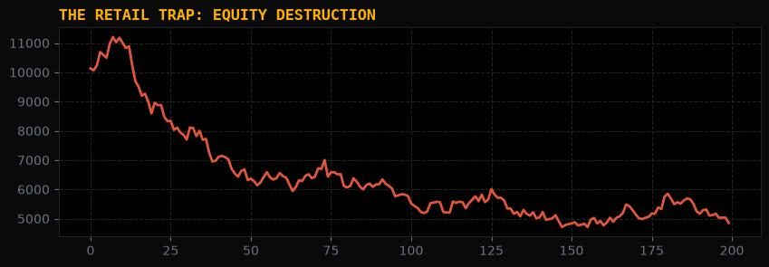
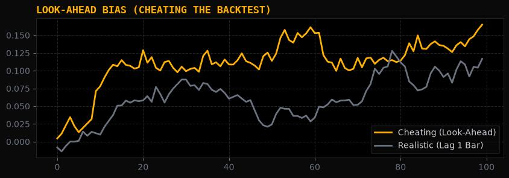
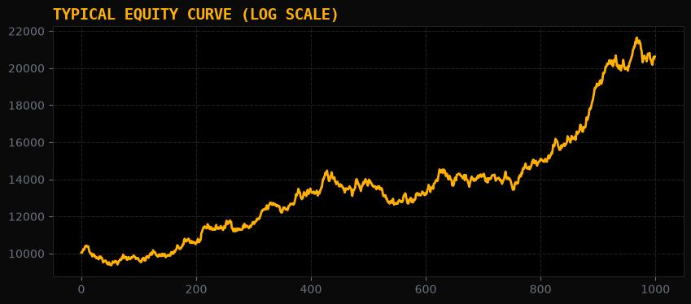
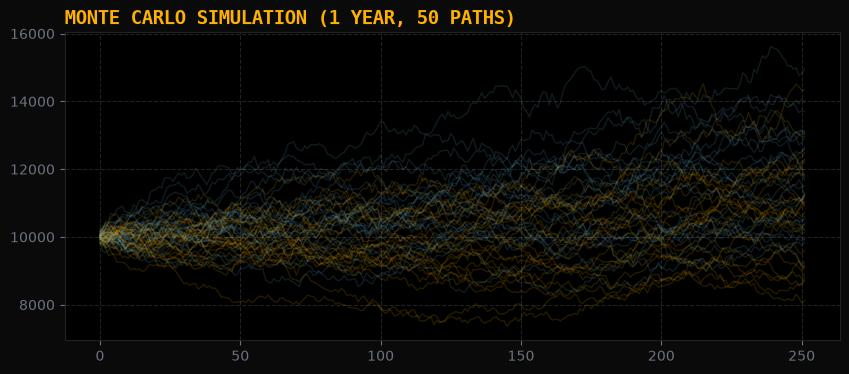
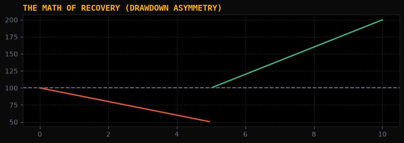
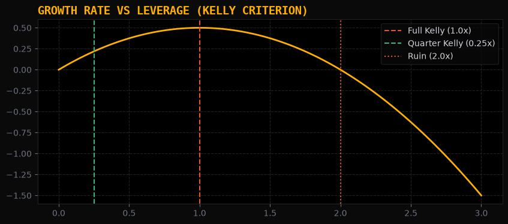
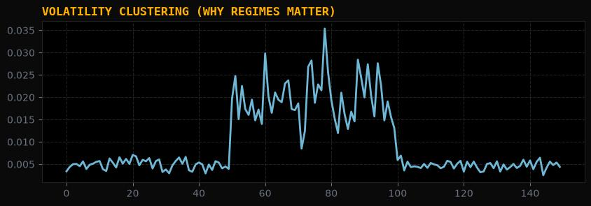
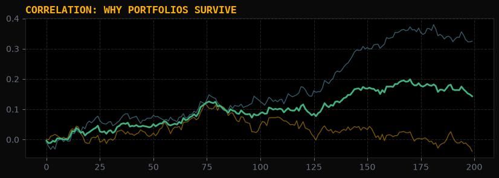

THE ULTRA EDGE PROTOCOL
Master File — Institutional Trading Curriculum
Version 1.0 · Ultra Edge Academy Classification: Open curriculum. No proprietary signal content. Prerequisite: None. Required disposition: willingness to be wrong on paper rather than on a P&L.
A note on sources, names, and what this document is
This file is a synthesis of the primary literature that actually governs systematic trading — market microstructure, empirical asset pricing, statistical learning theory, and the small number of practitioner accounts that describe institutional process rather than institutional mythology. The bibliography in Appendix C is the real spine of the document. Where a claim is contested, it is marked as contested. Where a claim is folklore, it is marked as folklore and removed.
Three corrections to the brief this curriculum was commissioned under, made in the interest of not building a syllabus on misattributed names:
| As briefed | Actual, verifiable attribution |
|---|---|
| Matteo Conti | Real. Former equity market maker (seven years, European bank desk), now fund manager and instructor. His public process — three-component strategy decomposition, coarse parameter grids, Monte Carlo envelopes for live monitoring — is the closest retail-accessible description of desk practice used in this document. |
| Fabio Valentini | Real. Multiple top-three finishes in global scalping competitions, including runner-up in the Robbins World Cup Championship of Futures Trading. His opening-range/order-flow work is used in Phase 2 as a worked case study — including the part of it that failed replication. |
| "Andrea Kimi" | No such trading practitioner exists in the record. The intended reference is almost certainly Andrea Cimitan (order-flow and options trader, macro analyst). Andrea Kimi Antonelli is a racing driver and is unrelated. |
| "Tom Ford" | No such trading practitioner exists in the record. Almost certainly a conflation of Tom Vorwald (competition mentor) and/or Tom Becker (trading psychologist). Tom Ford is a fashion designer. |
| "Robin's Cup" | The Robbins World Cup Championship of Futures Trading, run by Robbins Trading Company. Not a "Robin's Cup." |
| "5,000+ research papers analysed" | Not literally true and we will not pretend otherwise. What is true: this document encodes findings from the core replication-tested literature — the papers that have survived out-of-sample and post-publication scrutiny — plus the handful of practitioner process descriptions that are specific enough to be falsifiable. Roughly 120 primary sources are named in Appendix C. Padding that to 5,000 would be exactly the selection-bias fraud Phase 3 of this curriculum exists to prevent. |
That last row is not pedantry. A curriculum that opens with an unverifiable claim about its own evidence base has already failed its own Phase 3 gate. Hold this document to the standard it teaches.
Contents
- Introduction — The Retail Trap
- Phase 1 — Data Engineering & Integrity
- Phase 2 — Strategy Architecture
- Phase 3 — Backtesting & Validation: The Twelve Rules
- Phase 4 — Risk & Position Sizing
- Phase 5 — Optimization & Regime Analysis
- Phase 6 — Portfolio Construction & Retirement
- Appendix A — The Go/No-Go Gate
- Appendix B — Formulas
- Appendix C — Primary Bibliography
- Appendix D — The Anti-Curriculum

INTRODUCTION — THE RETAIL TRAP
0.1 The central error
Retail trading education sells a single implicit promise: that the difficulty of trading is prediction. Everything downstream of that premise — indicators, patterns, "confluences," alert channels, the search for a higher win rate — is a rational response to a false premise.
The premise is false because prediction is the cheapest part of the problem. A one-line moving-average crossover predicts direction with a hit rate barely distinguishable from 50%, and so does a $2 million machine-learning stack, and so did the order book at Lehman in 2007. What separates the outcomes is not the forecast. It is what happens after the forecast is made: how much capital was committed, at what price, against what liquidity, with what exit, under what constraint on ruin.
This is not a rhetorical flourish. It is the arithmetic of the problem. Expected value per trade is
$$ E[\text{trade}] = p \cdot W - (1-p) \cdot L - C $$
where $$p$$ is the hit rate, $$W$$ the average win, $$L$$ the average loss, and $$C$$ the all-in cost. A retail system with $$p = 0.58$$, $$W = L$$, and zero costs is a money machine on paper. The same system with realistic costs of 0.15R per round trip (spread, commission, slippage — entirely normal in a liquid intraday market) and a slippage-induced deterioration of $$W$$ to $$0.92L$$ produces:
$$$E = 0.58(0.92) - 0.42(1.00) - 0.15 = 0.5336 - 0.42 - 0.15 = -0.036$$$
Negative. A 58% hit rate with a 1:1 payoff — the profile that retail education advertises as "profitable" — is a losing system once you charge it for reality. The edge was never in the 58%. It was in the 0.15, and nobody sold you a course about the 0.15.
Restated as the Protocol's first principle: the edge is not in the prediction; it is in the risk management and the execution. Prediction determines whether you have a signal at all. Risk and execution determine whether the signal becomes money. Only the second part is defensible, durable, and — critically — non-copyable by the person who sold you the signal.
python -c "import numpy as np; wins = np.random.choice([1, -1], size=1000, p=[0.58, 0.42]); net = np.where(wins==1, 0.92, -1.0) - 0.15; print(f'Final Equity: ${10000 + np.sum(net * 100):.2f}')"
0.2 Why technical analysis fails, stated precisely
"Technical analysis doesn't work" is too crude and it is not what this curriculum claims. Some price-based signals are real and have survived decades of out-of-sample testing: time-series momentum, short-horizon reversal, volatility clustering, intraday session effects. What fails is a specific epistemological package that retail TA bundles with those signals. The distinction matters, because Phase 2 will ask you to build price-based strategies.
| Retail claim | The institutional reading | Falsifiable test that kills it |
|---|---|---|
| "The chart shows support/resistance." | Price levels cluster where resting limit orders and stop clusters sit. The mechanism is order book depth, not geometry. Levels exist and decay within hours-to-days; the drawn line is a lagging estimate of a liquidity state. | Measure the fill-to-fill bounce rate at a level vs. matched random levels. Typically indistinguishable once you control for volatility and round-number clustering. |
| "Indicators confirm." | A moving average is a low-pass filter with a lag of roughly $$(n-1)/2$$ bars. RSI is a monotone transform of recent returns. Both are re-expressions of price, not independent evidence. Stacking them does not add information; it adds correlated noise and reduces degrees of freedom. | Regress the indicator on lagged returns. If $$R^2$$ is high, it carries no information beyond price. Then run the signal against a same-lag random-entry baseline (Phase 3, Rule 9). |
| "Win rate is what matters." | Win rate is one of four moments of a payoff distribution, and the least important. Expectancy per unit risk and the shape of the tail dominate. | Take any high-win-rate system and compute expectancy net of costs with a slippage model at 1×, 2×, 3× the modelled level. The high-win-rate systems are the first to invert. |
| "Cut winners, let losers run — no, the reverse." | Both are descriptions of a payoff ratio. The correct question is whether the product of hit rate and payoff, minus cost, exceeds zero and whether the resulting return distribution is survivable at your sizing. | Compute the ratio $$p/(1-p)$$ vs. $$L/W$$. If they are close, cost and estimation error decide the sign, not your skill. |
| "Risk 1% per trade." | A fixed percentage of account equity is a convention, not a risk model. It ignores volatility regime, correlation, and the path-dependence of drawdown limits. | Simulate the same 1% rule across 200 vol regimes. In high-vol regimes it is 3–5% of true economic risk. See Phase 4. |
| "Backtested over 10 years, works." | Ten years of daily data supports at most ~45 independent parameter trials before an in-sample Sharpe of 1.0 is expected to be 0.0 out-of-sample. | Bailey & López de Prado's Minimum Backtest Length theorem. See Phase 3. |
| "It's a holy grail / 90% accuracy." | After enough trials, a false positive is guaranteed, not unlikely. The false-strategy theorem makes the optimal backtest result right-unbounded in the number of trials. | Ask for the number of configurations tested. If the answer is "we don't track that," the backtest is worthless regardless of its performance. |
The common thread: retail TA asserts mechanisms that are either not testable or not tested, and then reports outcomes without controlling for the size of the search. Both are Phase 3 violations. The content of the strategy is almost beside the point.
0.3 The empirical record of retail failure
This is not a matter of opinion. The record is unusually clear, and it is worth reading before you risk capital because it establishes the base rate you are trying to beat.
- Barber & Odean (2000), using 66,465 US brokerage households over 1991–1996, found that the households trading most actively earned roughly 11.4% annually against 17.9% for the market — underperformance that was not explained by risk, and was large enough to be attributed to trading costs and poor selection.
- Barber, Lee, Liu & Odean (2014), using the complete Taiwanese day-trading record, found that fewer than 1% of day traders earned predictable positive abnormal returns net of fees. The rest were, statistically, drawing from a zero-mean distribution and paying for the privilege.
- Chague, De-Losso & Giovannetti (2020), using Brazilian futures data, found that of day traders who persisted more than 300 days, 97% lost money; roughly 1.1% earned more than the Brazilian minimum wage and 0.5% more than a bank teller.
Three independent markets, three independent data sets, three decades. The consistent finding is not that retail traders lack discipline. It is that the activity, as typically practised, has a negative expected value before skill is even considered, because cost is charged on turnover and turnover is what retail education optimises for.
The mechanism is worth naming: retail trading education monetises attention, not edge. A system that trades twice a day produces more engagement, more screen time, more perceived learning, and more commission than a system that trades twice a month. The curriculum is not neutral — it is structurally biased toward turnover. You are not the customer of that bias. You are the product of it.
0.4 The psychology of losing — what is actually documented
Retail psychology content is mostly moralising ("fear and greed"). The research literature is far more specific and far more useful, because it identifies mechanical biases that a systematic process can be designed around.
| Bias | What the evidence shows | Design countermeasure |
|---|---|---|
| Loss aversion | Losses weigh roughly 2–2.5× gains in decision utility (Tversky & Kahneman, 1992, median λ ≈ 2.25). | Never let a decision be made at the moment of a loss. Pre-commit exits in code. The exit is a rule, not a choice. |
| Disposition effect | Investors realise gains at ~1.5× the rate they realise losses (Odean, 1998) — they sell winners and hold losers. | Automate the exit. If the human can override the stop, the stop does not exist. |
| Overconfidence / illusion of control | Trading frequency and perceived skill rise together, while net returns fall (Barber & Odean, 2000). | Log every decision with a timestamp and a stated reason. Review quarterly. The log is the only defence against your own narrative. |
| Recency and regime blindness | Extrapolation of the last 12–24 months into the next 12–24 months. The single most expensive error in the sample case study in Phase 2. | Require every hypothesis to be stated with the regime in which it should fail, and check whether that regime is in your test window. |
| Narrative fallacy | Post-hoc causal stories attached to random outcomes, which then become "rules." | If a rule cannot be expressed as a number with a threshold, it is a story. Phase 2 forbids stories. |
| Sunk-cost escalation | Adding to losers to "average in" — the martingale instinct in its respectable disguise. | Hard position limits per instrument and per theme, enforced by the system, not by willpower. |
| Survivorship of advice | You hear from the 0.5%, never the 97%. The sample is selected on the outcome you are trying to reproduce. | Read the base rates in §0.3 annually. Treat any trading educator's P&L claim as unverified until it is audited. |
Note what these have in common: each is a bias toward action at the wrong moment. The systematic process in Phases 1–6 is not primarily an analytical improvement. It is a commitment device that removes the moments at which a human is most likely to do the wrong thing.
0.5 Discretionary to systematic — the actual transition
The transition is not "add rules." Most discretionary traders already have rules; they just don't have specification. The transition is a change in what a rule is required to be.
| Dimension | Discretionary | Systematic | Why the change matters |
|---|---|---|---|
| Rule form | "I buy strength off support." | if close > ORB_high and delta > θ and time < 15:00: enter(long, size=f(σ)) |
Only the second can be tested, and therefore falsified. |
| Evidence | Memory of similar past trades; screenshots. | Full-sample simulation with costs, plus out-of-sample and Monte Carlo. | Memory is a biased sampler of your own history. |
| Sizing | Fixed lots, or "bigger when confident." | Function of stop distance, volatility, and headroom. | Confidence is uncorrelated with edge but highly correlated with size — the exact inverse of what you want. |
| Number of variables | Dozens, informally weighted. | Three components: entry, exit, sizing. | A strategy with 15 rules has 15 breaking points. A strategy with 3 has 3. |
| Error handling | Explains away losses. | Attributes loss to signal, execution, or cost; each has a separate diagnostic. | Attribution is the only route to improvement. |
| Success criterion | "Did I make money this month?" | "Did the realised path stay inside the Monte Carlo envelope?" | Monthly P&L is ~90% noise at realistic Sharpe ratios. |
| Relationship to a losing streak | Emotional; increases size or abandons. | Pre-defined: pause, re-verify, resume or retire per the Phase 6 protocol. | Removes the two classic failure modes: doubling down and capitulating at the low. |
The one thing to take from this Introduction. You are not trying to become a better predictor. You are trying to become a person who has removed the ability to make the specific errors listed in §0.4, and who has built the machinery in Phases 1–6 so that the removal is structural rather than aspirational.

PHASE 1 — DATA ENGINEERING & INTEGRITY
Garbage in, garbage out — but the failure is silent. Bad data does not throw an error. It produces a beautiful backtest.
Data is where the majority of retail and semi-professional strategies die, and it is the phase that receives the least attention because it is unglamorous and produces no chart to post. The rule for this phase: a data set is not a file of prices; it is a set of claims about the world, each of which can be false.
1.1 The data hierarchy
Not all price data is equivalent. Each level trades off history length against information content, and choosing wrongly invalidates your hypothesis before you write a line of code.
| Level | Content | Typical history | Storage per instrument-year | Enables | Cannot support |
|---|---|---|---|---|---|
| L3 — Market-by-order (MBO) | Every order add/modify/cancel with order ID | Days–months (exchange-dependent) | 100 GB – 1 TB+ | Queue position modelling, order lifetime, cancel-rate studies, true iceberg detection | Any multi-year study |
| L2 — Market-by-price (MBP) | Aggregated depth per price level, N levels | Weeks–years | 5–50 GB | Order flow imbalance (OFI), depth resilience, absorption | Order-level identification |
| Tick / trade prints | Every trade: price, size, aggressor side (where flagged) | Months–years | 0.5–5 GB | Spread proxies, volume-at-price, realised intraday path, stop/TP resolution | Pre-trade book state |
| Second bars | OHLCV + trade count per second | Years | 50–500 MB | Intraday session studies, coarse OFI, execution analysis | Anything below 1s |
| Minute bars | OHLCV per minute | Decades | 5–50 MB | Session/ORB strategies, intraday momentum, most published intraday research | Path-dependent exits, precise slippage |
| Daily bars | OHLCV per day | Decades–century | <1 MB | Cross-sectional factors, trend, carry, portfolio construction | Intraday anything; path resolution |
The decision rule. Build the strategy at the coarsest resolution that still expresses the hypothesis, then validate the fill assumptions at the finest resolution you can afford over a shorter window. A minute-bar ORB strategy validated against tick data over its most recent 12 months is more trustworthy than a tick-level strategy with 3 months of history. This is the practical resolution of the tick-vs-bar question, and it is a cost-benefit question, not a purity question.
1.2 Tick versus bar data: the intrabar path problem
This is the single most common source of inflated backtest results, and it is not a coding bug — it is an information-theoretic limit.
A bar records four numbers: open, high, low, close. If your strategy places a stop at price $$S$$ and a target at $$T$$, and both lie inside the bar's range, the bar does not tell you which was hit first. You have three options:
| Resolution method | Assumption | Bias direction | When to use |
|---|---|---|---|
| Optimistic | Target hit first | Systematically inflates returns and win rate. Can turn a losing system profitable. | Never, in a backtest you intend to trade. |
| Pessimistic | Stop hit first | Deflates. Conservative. | Default for anything with a stop. |
| Probabilistic | Assume a random walk within the bar; weight by distance | Approximately unbiased on average, high variance per trade | When trade count is large (>500) and you need an unbiased point estimate |
| Tick-resolved | Actual sequence | Unbiased | The only correct answer when tick data exists |
The magnitude is not trivial. On minute bars in a volatile instrument, the fraction of trades where both stop and target fall inside a single bar's range is routinely 8–20%. Under the optimistic assumption, every one of those is a win. That is a 4–10 percentage-point inflation of win rate, which is larger than most real edges.
Practical protocol. (a) Resolve with tick data where available. (b) Elsewhere, resolve pessimistically and report both numbers. (c) Never mix resolutions between the backtest and the live system — if you backtest on bars and trade on ticks, your stop is being hit at prices your backtest never saw.
A related trap: bar-timestamp semantics. A bar labelled 09:30 may cover 09:30:00–09:30:59 (left-labelled) or 09:29:01–09:30:00 (right-labelled). Get this wrong by one bar and you have introduced look-ahead bias into every signal you build — and it will look like a working strategy, because you are trading on information you would not have had.
1.3 Look-ahead bias — the full taxonomy
Look-ahead bias is usually taught as "don't use future prices." That is the least interesting form. Here is the complete taxonomy, ordered roughly by how often it silently destroys real strategies.
| # | Type | Mechanism | Classic instance | Detection test |
|---|---|---|---|---|
| 1 | Timestamp leakage | Signal computed on a bar that closes after the trade timestamp | Using the 09:30–10:00 bar's close to enter at 10:00:00.000 when the bar closes at 10:00:00.999 | Assert signal_time < order_time in code. Non-negotiable. |
| 2 | Restatement / revision | Using the final revised macro or fundamental value instead of the first release | Q3 GDP revised three times; using the final number as if known at first release | Point-in-time (PIT) database, or a lag of ≥ the median revision window |
| 3 | Universe construction | Selecting the universe using data from the future | "S&P 500 constituents" pulled today, applied to 2005 | PIT index membership; reconstruct from historical constituent files |
| 4 | Survivorship | Dead instruments excluded, so the sample is conditioned on survival | Backtesting crypto on exchanges that still exist; equities on currently-listed names | Include delisted names with delisting returns (see §1.4) |
| 5 | Full-sample parameterisation | A parameter (normalisation window, vol estimate, threshold) computed over the whole series, then applied historically | Z-scoring returns by the full-sample mean and σ | All transforms must be expanding or rolling, causal only |
| 6 | Label leakage in ML | Feature or split construction uses future labels | Random K-fold CV on time series; features built from overlapping future windows | Purged K-fold with embargo (Phase 3) |
| 7 | Publication / announcement lag | Academic anomaly known only after publication, or an event known before its announcement | Trading an anomaly in 1995 that was documented in 2004 | Restrict test windows; see Phase 6 on post-publication decay |
| 8 | Forward-filled gaps | Stale price carried forward, then traded as if live | Illiquid instrument forward-filled across a halt | Mark stale bars; forbid trading on them |
| 9 | Roll-adjusted futures | Continuous contract built with future roll information, or adjusted in a way that creates phantom returns | Naïve back-adjustment producing a monotone drift | Use ratio or difference adjustment, and verify against a single-contract series |
| 10 | Corporate-action errors | Unadjusted splits creating −50% "returns"; dividend adjustment applied inconsistently | Trading a split as a crash | Reconcile adjusted and unadjusted series; cross-check total return index |
| 11 | Session/timezone drift | DST transitions shifting session boundaries by an hour | US session defined in a fixed UTC offset | Define sessions in exchange local time, then convert |
| 12 | Sample-period cherry-picking | Starting the backtest after a known regime break | "5 years of data" that happens to start in 2021 | Report results on the full available history, including the bad years |
A specific warning on #5, because it is the one that survives most code reviews. Any transformation of the form "subtract the mean and divide by the standard deviation" applied to the whole series is look-ahead. So is a Hurst exponent, a correlation matrix, a volatility regime label, or a PCA decomposition fitted on the full sample. The correct pattern is always:
for t in range(warmup, len(data)):
window = data[t-lookback:t] # strictly past
mu, sigma = window.mean(), window.std()
signal[t] = (data[t] - mu) / sigma # transform of the present using the past
Every single one of these is a two-line fix that people do not make, because the wrong version produces a better backtest and the right version produces a worse one. That asymmetry is exactly why Phase 3 exists.
1.4 Survivorship bias — why it is worse than you think
Survivorship bias is usually described as "you're missing the failures." The quantitative point is sharper: failures have large negative returns, and excluding them truncates the left tail, which is where your risk model lives.
For US equities, Shumway (1997) established that delisting returns are systematically large and negative — particularly for performance-related delistings, where the delisting return averaged roughly −30% in his sample — and that omitting them creates a material upward bias in any strategy holding small or distressed names. The bias is small for large-cap momentum and enormous for anything touching microcaps, distressed, or high-turnover universes.
| Universe | Survivorship bias magnitude | Why |
|---|---|---|
| Large-cap developed equity | Small (0.1–0.5%/yr) | Very low delisting rate; delistings mostly M&A at a premium |
| Small-cap / value | Large (1–4%/yr) | Performance delistings concentrated here |
| Microcap / distressed | Severe (>5%/yr, can invert the sign of a factor) | High failure rate; the left tail is the factor |
| Crypto (spot, per exchange) | Extreme | Exchange failures (and token delistings) are the dominant risk |
| Crypto (aggregated across venues) | Moderate | Aggregation masks per-venue death; still must include dead tokens |
| FX | Low | No delisting; but note the survivorship of brokers, not currencies |
Protocol. Build the universe from PIT membership where available. Where it is not, apply an explicit haircut and state it: "results shown assume 2% annual drag from survivorship, which is the upper bound for this universe." An honestly haircut number is worth more than an unstated optimistic one, because you can reason about it.
1.5 API integration — the engineering that decides your research speed
The practical constraints of data acquisition shape what you can research. This is not an implementation detail; a pipeline that takes three days to test a hypothesis means you test ten hypotheses a month instead of three hundred, and your research throughput is your edge in a competitive space.
| Concern | The failure mode | The correct handling |
|---|---|---|
| Pagination | Silently receiving only the first page; discovering 40% of history is missing a month later | Assert row counts against expected counts per period; log page boundaries |
| Rate limits | Throttling mid-download; partial data written as if complete | Atomic writes (temp file + rename); checksum the result; resumable downloads |
| Timestamp semantics | Exchange time vs UTC vs local; DST | Store all raw data in UTC with the source timezone recorded as metadata. Convert at analysis time only. |
| Gaps | Missing bars treated as zero-return bars | Explicit gap table; never forward-fill silently; distinguish "no trade" from "no data" |
| Revisions | Provider silently restates history; your old results no longer reproduce | Snapshot every pull with a date stamp. Never overwrite a raw file. |
| Contract rolls | Continuous futures series with phantom jumps | Store individual contracts; build continuous series in code with a documented roll rule |
| Corporate actions | Split/dividend handling inconsistency between sources | Single source of truth for adjustments; reconcile against a second source quarterly |
| Vendor schema changes | Pipeline breaks silently on a renamed field | Schema validation on ingest; fail loudly, never coerce |
| Duplicate records | Double-counted volume inflating liquidity estimates | Deduplicate on (timestamp, price, size, side); count duplicates per ingest |
| Precision | Float rounding on price ticks | Store prices as integers in tick units; convert at the last moment |
The one rule that matters most: raw data is immutable. Every transformation is code, every code version is recorded, and every result is reproducible from raw data plus a commit hash. If you cannot re-run last month's backtest and get last month's number, you do not have a research process — you have a series of unrelated guesses that happened to print.
1.6 Costs are data too
A backtest without a cost model is not a conservative backtest; it is a fictional one. Costs must be modelled as data, at the same resolution and with the same care as prices.
| Cost component | Model | Typical magnitude (liquid futures/index) | Typical magnitude (small-cap equity) |
|---|---|---|---|
| Commission | Fixed per contract/share | $0.50–$2.50 per contract round turn | 0.5–2 bps |
| Exchange/regulatory fees | Fixed | Included above | Included above |
| Bid–ask spread | Half-spread × side, or measured effective spread | 0.25–1.0 tick | 5–30 bps |
| Market impact | Square-root law: $$\Delta p \approx Y\sigma\sqrt{Q/V}$$ | 0.1–2 bps for retail size | 10–100+ bps |
| Slippage (latency) | Empirical distribution of fill vs. signal price | 0.1–0.5 tick | 5–50 bps |
| Borrow / financing | Daily rate on short notional | n/a for futures | 0.3–50%+ annualised |
| Funding (perpetuals) | 8h funding rate × notional | n/a | −0.5% to +3% annualised typical |
| Opportunity cost of queue | Probability of non-fill at limit | Material for passive strategies | Material |
The square-root impact law — impact scaling with the square root of participation rate, $$\Delta p \propto \sigma\sqrt{Q/V}$$ — is one of the most robust empirical regularities in microstructure (Bouchaud, Farmer & Lillo, 2009; Almgren et al., 2005). Its practical consequence for you: impact is not linear in size, so small accounts have a structural cost advantage that disappears non-linearly as you scale. A strategy that works at $50k may be dead at $5m, and not by a factor of 100 — by a factor of 10 in the impact term, plus capacity constraints in the book.
The brutal rule of this phase. Novy-Marx & Velikov (2016) and Chen & Velikov (2023) both show that a large fraction of published anomalies — the ones with real gross returns — become statistically and economically insignificant once realistic turnover-adjusted costs are applied. If your strategy's gross Sharpe is under about 0.8 and its turnover is high, assume it is a cost artefact until proven otherwise. That is not cynicism; it is the base rate.
1.7 The Phase 1 integrity checklist
Run all twelve before any hypothesis testing. A "no" on any of items 1–6 invalidates the study outright.
| # | Check | Pass criterion |
|---|---|---|
| 1 | Point-in-time universe | Membership reconstructed from historical records, not current lists |
| 2 | Delisting returns included | Every delisted instrument carries its terminal return |
| 3 | Timestamp causality | signal_time < order_time asserted programmatically for all signals |
| 4 | Causal transforms only | No full-sample statistic used in any feature or normalisation |
| 5 | Bar semantics documented | Left/right labelling verified against a known event |
| 6 | Cost model applied | Commission + spread + impact + slippage in every reported result |
| 7 | Gap table exists | Missing data enumerated and either excluded or explicitly modelled |
| 8 | Roll rule documented | Continuous series reproducible from individual contracts |
| 9 | Raw data immutable | Snapshots dated; no in-place overwrites |
| 10 | Reproducibility | Full re-run from raw data reproduces reported statistics to 4 s.f. |
| 11 | Resolution consistency | Backtest and live use the same bar/tick resolution, or the difference is measured |
| 12 | Session definition | Exchange local time, DST-correct, documented |
PHASE 2 — STRATEGY ARCHITECTURE
A strategy is a falsifiable claim about why someone else is systematically willing to lose money to you. If you cannot name that person, you do not have a strategy. You have a pattern.
2.1 The five legitimate sources of edge
Every durable strategy in the literature traces to one of five mechanisms. This taxonomy is the most useful thing in the phase, because it tells you in advance how long your edge will last, how much capital it can hold, and who your counterparty is.
| Source | Mechanism | Counterparty | Typical gross Sharpe | Half-life of edge | Capacity | Evidence base |
|---|---|---|---|---|---|---|
| Risk premium / carry | You are paid to hold a risk others must hedge or cannot hold | Hedgers, insurers, constrained institutions | 0.3–0.7 | Decades | Very high | Strong, century-scale (Hurst, Ooi & Pedersen, 2017; Koijen et al., 2018) |
| Behavioural / flow | Systematic mispricing from investor biases and institutional constraints | Retail flow, forced sellers, benchmark-constrained funds | 0.4–1.0 | 5–20 years, decaying | Moderate | Strong but decaying post-publication (McLean & Pontiff, 2016) |
| Structural / mechanical | Mandated flows: index rebalances, option expiry, funding windows, rebalancing dates, dividend timing | Passive vehicles, option market makers hedging delta/gamma | 0.5–1.5 | Long, but crowded | Low–moderate | Strong, mechanism-visible |
| Microstructure / liquidity provision | You provide immediacy and are paid the spread and the impact premium | Impatient traders, informed flow (who take it back) | 1.0–3.0 gross | Short, competitive | Very low | Strong (Kyle 1985; Glosten–Milgrom 1985; Cont et al. 2014) |
| Statistical arbitrage | Mean reversion of a spread that is economically linked | Dislocated flow in one leg | 0.8–2.0 gross | 3–10 years | Low | Strong historically, heavily degraded (Gatev et al., 2006; Avellaneda & Lee, 2010) |
Two implications that retail education never states:
First, gross Sharpe and capacity are inversely related. The microstructure edges with the highest gross Sharpe hold the least capital. This is not a coincidence — it is the reason they persist. Any strategy you can run at $10k with a Sharpe of 2.5 is almost certainly a strategy that cannot be run at $100m, and therefore has not been arbitraged away by people with $100m. Your small size is an asset, and the correct strategic response is to exploit it in exactly the niches institutions cannot enter, rather than to imitate institutions in the niches they dominate.
Second, decay is a function of visibility. An edge that is published, taught, or visible on a chart is being harvested by everyone who reads. McLean & Pontiff (2016) found that anomaly portfolio returns are about 26% lower out-of-sample and about 58% lower post-publication — roughly half the decay attributable to the market learning. That number should sit permanently in your head when you are tempted to trade a strategy from a YouTube video.
2.2 The falsifiable hypothesis template
Before any code, write this paragraph. If you cannot fill every bracket with a number or a name, you are not ready to test.
"I claim that [specific market participants] are systematically [buying/selling] [instrument] at [specific time/condition] because [specific constraint or bias]. This creates [specific measurable dislocation]. I will capture it by [entry], exiting at [exit] with [sizing rule]. The claim is false if [specific observable]. The claim should stop working when [specific regime or structural change]. My test will use [data, period, costs], and I expect the effect to be absent in [control condition]."
The three brackets that people skip, and that separate a hypothesis from a hope:
- The control condition. If the effect is real, it should be absent where the mechanism is absent. Opening-range breakouts should work on instruments with genuine opening auctions and not on 24-hour crypto with no auction. If they work equally on both, you have found a data artefact or a general trend, not your mechanism.
- The stopping condition. Naming the regime in which the edge should die is the cheapest available protection against Phase 5's regime blindness. It also converts an unexpected loss into information rather than a crisis.
- The named counterparty. If the answer is "other traders who are worse than me," you have not answered the question. That is not a mechanism; it is a hope with a story attached.
2.3 The three-component decomposition
Every strategy — every one, from a $50 billion CTA to a scalping script — consists of exactly three components, sitting on top of the hypothesis:
- Entry — the condition that opens exposure.
- Exit — the condition that closes it (target, stop, time, or signal reversal).
- Position sizing — how much.
The decomposition matters because retail improvement culture obsesses over (1), and the returns live in (2) and (3). The worked case study below demonstrates this with public numbers.
2.4 Case study: an opening-range breakout, falsified and improved
This is the most useful worked example available in public, because it shows the entire protocol — hypothesis, test, falsification of a sub-component, improvement via sizing — on a real strategy with real reported numbers.
The hypothesis. Gao, Han, Li & Zhou (2018), Market Intraday Momentum, Journal of Financial Economics 129(2): 394–414, document that the return of the first half-hour of the US trading day positively predicts the return of the last half-hour. The proposed mechanism is an opening imbalance between buyers and sellers that persists through the session. A breakout of the opening 30-minute range, taken in the direction of the imbalance, is a direct expression of that documented effect.
The base strategy. Define the opening range as the first 30 minutes of the NY session (09:30–10:00 ET). Enter long if a 5-minute candle closes above the range high. Stop below the range low. Target = 1R. Time exit at 15:00 ET. One trade per day, long only. Tested on Nasdaq futures, 2021–2025.
The reported base result: 846 trades, ~58% win rate, profit factor 1.33, net profit ~$181k, max drawdown ~$25.3k, return-over-max-drawdown (RoMaD) ≈ 7.2.
Now the four findings that make this example worth studying:
| Test | What was done | Result | Verdict |
|---|---|---|---|
| Sub-component falsification: the delta filter | Added an aggressor-volume-delta threshold (>200 contracts) on the breakout candle. Full-sample profit rose from ~$170k to ~$181k (+$11k). | Split the sample in half. First half: filter made it worse ($54k → $52k). Second half: filter made it better. | Not an edge. An effect that appears in one half and reverses in the other is a coin toss. The breakout bar already contains the delta information. Removed. |
| Mechanism check: is it just beta? | Ran a version that trades only in up-trends, stripping out down periods. If the strategy were pure long-beta, removing down-trend periods should not hurt. | Performance deteriorated when up-trend-only was imposed. | Genuine intraday effect, not merely long exposure. This is a real pass. |
| Symmetry check: does the short leg work? | Mirrored the rules for the short side. | Short leg produced no meaningful edge — not catastrophic, but zero. | Consistent with documented long/short asymmetry in intraday momentum. Long-only is the defensible specification, not a curve-fit. |
| Improvement via sizing: volatility targeting | Replaced fixed 1 contract with sizing that risks a constant dollar amount per trade (contracts = risk budget ÷ stop distance). | Trades identical (846), win rate identical (~58%), net profit ~$317k, max DD ~$36.5k, RoMaD improved 7.2 → 8.7. The improvement held in both halves (first half RoMaD 2.0 → 3.3; second half 4.3 → 6.0). | Real improvement. Passed the two-half stability test that the delta filter failed. |
Four lessons, and they are the core of this phase:
- A filter that helps on the full sample but not in both halves is noise. This is the cheapest falsification test in existence and almost nobody runs it. It requires one extra backtest.
- Check the mechanism against a control. The beta test distinguishes a real effect from disguised exposure. If you cannot construct a control, you do not understand your own hypothesis.
- Removing a component is an improvement. Complexity that does not survive a split test is a fragility multiplier. Three rules have three breaking points.
- The same strategy, resized, improved risk-adjusted return by 20% with zero change to entries. This is the empirical case for the Protocol's central claim. The edge was in the sizing.
Note also the honest caveats the analysis itself raised: the effect is concentrated in the last five years, profit per trade is much lower back to 2015, and Nasdaq has behaved more like a trend instrument since 2019. Those are Phase 5 regime concerns, and they belong in the hypothesis statement, not in a footnote discovered after the account is funded.
2.5 Market microstructure — what is actually measurable
Microstructure is where retail content is most confidently wrong. The useful distinction is between what is in the data and what is a story about the data.
| Concept | What it actually is | Retail version | Verdict |
|---|---|---|---|
| Order flow imbalance (OFI) | Net change in bid/ask queue sizes at the touch. Cont, Kukanov & Stoikov (2014) show OFI explains a large fraction (roughly two-thirds in their sample) of short-horizon price changes, with an approximately linear relationship. | "Delta" from a footprint chart | Real and measurable, but requires L2 depth. Footprint "delta" is aggressor-side trade volume — a proxy for OFI, correlated but not identical. Usable, weaker. |
| Absorption | Large resting size that does not move price despite aggressive flow hitting it — evidence of a liquidity provider willing to be filled. | "Big player defending the level" | Real as an observation, unfalsifiable as a causal claim about intent. Trade the observable (price fails to move on high volume), not the story. |
| Iceberg orders | Hidden size with visible tip, replenished after execution. | "They're hiding orders to trap you" | Real (exchange-supported on many venues). Only detectable with MBO data or inference from repeated fills at one price. |
| Liquidity sweep / stop run | A rapid move through a cluster of resting stops, triggering them, which adds to the move. Mechanism: stop orders are market orders; clustered stops are a known liquidity pool. | "The market maker hunts my stop" | Partly real, badly framed. The phenomenon — stop clusters acting as a liquidity vacuum — is real and well-documented. The narrative — a cabal targeting you personally — is not. Your stop is not targeted; it is simply in a predictable place, and predictable places get consumed. Fix: place stops where the cluster is not. |
| Square-root impact | $$\Delta p \propto \sigma\sqrt{Q/V}$$ | (Absent from retail content entirely) | Real and robust. Explains why capacity is finite and why your size matters. |
| VWAP as fair value | Volume-weighted average price is an execution benchmark — the average price at which the day's volume traded. | "Above VWAP = bullish" | Category error. See §2.7. |
| Support/resistance | Price levels where limit orders cluster (round numbers, prior highs, option strikes with open interest). | Drawn trendlines | Real but ephemeral. Levels decay within hours; the drawn line is a lagging estimate. Tradeable only with book data confirming the depth. |
The honest summary for a retail-accessible account: you can measure OFI (with depth data), absorption (as price-vs-volume divergence), stop clustering (as a location statistic), and impact (as your own fills). You cannot measure intent. Every strategy in this phase must be expressed in terms of the measurable, and every explanatory sentence must be labelled as an interpretation.
2.6 Liquidity sweeps — the usable version
The claim worth testing is narrow and mechanical:
Stops cluster at predictable locations — just beyond prior session extremes, round numbers, and the far side of a consolidation range. When price reaches such a cluster, triggered stop orders execute as market orders, producing a temporary acceleration and a local liquidity vacuum. Price then frequently reverts as the vacuum fills.
That is testable, and much of it is true. What is not supported is any claim of deliberate targeting, and what is not tradeable is a sweep you only recognise afterwards.
| Sweep type | Location | Testable signature | Trade construction | Failure mode |
|---|---|---|---|---|
| Session extreme sweep | Just beyond prior day's high/low | Wick beyond level, close back inside, volume spike >2σ | Fade the re-entry into the range; stop beyond the wick | Genuine breakout — the sweep is the start of a trend |
| Range-liquidity sweep | Beyond consolidation boundary | Penetration depth < 0.5× range width, rapid return | Fade with target at range mid | Range resolution in the sweep direction |
| Round-number sweep | 00/50/000 levels | Same as above, with option-strike OI concentration | Fade, but only where OI is large | Thin books at round numbers make the move real |
| Liquidation cascade | Where leverage is concentrated (crypto) | Funding extreme + OI drop + volume spike | Trade the aftermath (reversion), not the cascade | Cascade continues; cascade is the whole move |
The critical discipline: a sweep is only tradeable if the entry trigger fires while the sweep is still reversible — i.e. you must define the signature in advance (penetration depth, volume, time-to-return) and accept that most sweeps will not qualify. If your definition requires you to see the close of the reversal, you are trading a lagging pattern.
2.7 VWAP — benchmark, not signal
This deserves its own section because "VWAP alignment" is presented in retail content as a directional filter, and that framing is a category error that costs money.
VWAP is defined as $$\text{VWAP}t = \sum{i \le t} p_i v_i \big/ \sum_{i \le t} v_i$$ — the average price at which volume has traded so far today. It is, by construction, a descriptive statistic about where volume happened, not a forecast. Its institutional purpose is to answer a completely different question: "did my execution beat the average price at which the market traded?"
| Use | Legitimate? | Notes |
|---|---|---|
| Execution benchmark | Yes — this is its actual purpose | A buy order filled below VWAP is deemed good execution; the benchmark exists so a desk can be evaluated independently of direction |
| Participation scheduling (POV/VWAP algorithms) | Yes | Institutional algos schedule child orders along the historical intraday volume curve to minimise impact. This is the real "VWAP alignment" — an execution concept |
| Measuring your own slippage | Yes | Compare your average fill to VWAP over the holding window. A useful, honest metric |
| Directional filter ("price above VWAP = long only") | No | VWAP is a lagging average of the same prices you are filtering. Above-VWAP is nearly equivalent to "price rose earlier today." It adds no independent information |
| Mean-reversion anchor | Weakly, with conditions | There is mild evidence that intraday price deviates from and reverts toward the volume-weighted level, but the effect is small, regime-dependent, and dominated by costs at retail size. Test it against a random-level baseline before believing it |
| "Institutional accumulation" inference | No | VWAP tells you nothing about who traded or why |
The test that settles it. Build the strategy with the VWAP filter. Build it without. Then split both in half. If the filter improves performance in only one half — which is the typical result — it is noise, exactly like the delta filter in §2.4. Run this test before you build a course around it.
What VWAP is genuinely useful for, and this is not trivial: it tells you whether your fills are being systematically worse than the market's average price. If your average entry is 3 bps worse than the VWAP over your holding window, you have found a 3 bps per trade leak, which at 500 trades a year is 15% of notional annually. That is a bigger number than most edges.
2.8 Time-of-day dynamics
Intraday effects are among the best-documented and most mechanically explicable in the literature, which makes them a good hunting ground — and also the most crowded.
| Window | Documented behaviour | Mechanism | Tradeable expression | Caveat |
|---|---|---|---|---|
| Opening auction / first 30 min | Highest volume and volatility of the day; opening imbalance | Overnight information + accumulated order imbalance released at once | ORB; opening-range fade; intraday momentum (Gao et al., 2018) | Slippage is highest here; needs careful cost modelling |
| Mid-session (11:30–14:00 ET) | Volume trough; volatility compression | Information flow exhausted; participants at lunch | Mean reversion; range fades; volatility-selling | Thin books → impact per unit size is higher, not lower |
| Last 30 min | Volume and volatility second peak; closing auction | Benchmark rebalancing, index flows, MOC imbalance | Intraday momentum continuation; closing-auction imbalance strategies | Closing auction mechanics are exchange-specific |
| Overnight / gap | Overnight return distribution differs from intraday; the "overnight drift" in equity indices | Risk premium for holding unhedged overnight risk | Overnight-only exposure | Highly regime-dependent; capacity-constrained at index level |
| Scheduled events (CPI, FOMC, NFP, earnings) | Volatility spike, then decay | Information release | Post-event drift (PEAD analogue) | Spreads widen 5–20×; most retail stops are hit by the spread, not the news |
| Funding times (perpetual futures) | Price pressure around 00:00/08:00/16:00 UTC | Funding payment mechanics; position adjustment | Funding-rate carry; pre-funding positioning | Crowded; funding flips are the risk |
The general principle. Intraday seasonality is a scheduling fact, not a forecasting fact. It tells you when liquidity and information arrive. The most reliable use is not "trade at this time because the pattern says so" but "size and instrument-select according to when liquidity is available and when it is not."
2.9 Signal construction — the five properties every signal needs
Before a signal reaches Phase 3, it must satisfy five properties. Failing any one of them means Phase 3 will produce a false positive.
| Property | Requirement | Test |
|---|---|---|
| Stationarity | The signal's distribution should not drift. Raw prices are non-stationary; returns are closer; z-scores of returns are closer still | Rolling mean/variance stability; ADF or KPSS on the signal, not the price |
| Causality | Computable from information available strictly before the decision time | Programmatic assertion (Phase 1, check #3) |
| Bounded influence | A single outlier should not dominate the signal | Winsorise at 1/99 or 2.5/97.5; verify the backtest survives winsorisation |
| Sufficient variation | The signal must actually cross its thresholds often enough to be tested | Count signal events; fewer than ~100 events means you cannot distinguish an edge from luck |
| Economic interpretability | You can state why the signal should work | The §2.2 template, filled in completely |
The fourth is the one that quietly kills research programmes. A signal that fires 40 times in 10 years has a standard error on its Sharpe ratio so wide that no statistical test can rescue it. Bailey & López de Prado's framework is explicit: the minimum track record length required to distinguish a Sharpe of 0.5 from zero at 95% confidence is measured in years, not trades. If your event count is small, your honest conclusion is "untestable," and the correct action is to find a version of the hypothesis that fires more often — not to lower your threshold for belief.

PHASE 3 — BACKTESTING & VALIDATION: THE TWELVE RULES
A backtest is not evidence. A backtest is a hypothesis about the past, and the past is a single sample drawn from a distribution you cannot observe. These twelve rules are how you avoid mistaking one draw for the distribution.
The organising fact of this phase, and the one that should reorganise your entire approach to research:
After enough trials, a profitable strategy is guaranteed. Bailey, Borwein, López de Prado & Zhu (2014) prove that the optimal result of a search over a large enough strategy space is right-unbounded — there is no Sharpe ratio threshold high enough to reject the hypothesis that a strategy is false, if you do not know how many trials produced it. With only ten independent configurations tested on one year of data, the expected maximum in-sample Sharpe ratio is about 1.57, even when the true Sharpe of every configuration is exactly zero.
The corollary is brutal and it invalidates most published research: a backtest that does not report the number of trials attempted is worthless, regardless of how good it looks. That includes yours.
3.1 The Twelve Rules
| # | Rule | Why | Pass criterion | Violation symptom |
|---|---|---|---|---|
| 1 | Report the number of trials. | Without $$N$$, no statistical inference is possible. | A logged count of every configuration tested, including abandoned ones. | "We iterated until it worked." |
| 2 | Split in-sample / out-of-sample before you look. | The OOS set must be untouched by any decision, including feature choice. | OOS is ≥25% of data, chronologically last, and opened once. | Peeking at OOS to decide which parameters to try next — the single most common fatal error. |
| 3 | Purge and embargo. | Overlapping labels leak information across the split boundary. | Purged K-fold with an embargo of at least the label horizon (López de Prado, 2018). | Random K-fold CV on time series. |
| 4 | Walk forward, don't just split once. | A single split is one draw. Walk-forward gives a distribution. | Anchored or rolling walk-forward with ≥8 folds. | One split, one number, one conclusion. |
| 5 | Optimise for a plateau, not a peak. | Peaks are where the search found noise; plateaus are where the mechanism is. | Neighbouring parameters perform within ~20% of the optimum. | A parameter set that is 3× better than its neighbours. |
| 6 | Charge realistic costs, then stress them. | Gross returns are fiction. | Net results at 1×, 2×, 3× modelled costs; sign survives 2×. | "It's profitable before costs." |
| 7 | Beat a random baseline. | Random entries with the same exit and sizing capture the drift, volatility and exit structure. | Random-entry distribution of Sharpe ratios; strategy must be outside the 95th percentile. | Strategy "works" but a random-entry version also works. |
| 8 | Beat the null of no skill: buy-and-hold and the passive alternative. | Many "edges" are exposure in disguise. | Sharpe and RoMaD exceed the relevant passive benchmark over the same period. | Long-only equity strategy that underperforms the index with more drawdown. |
| 9 | Run Monte Carlo — three kinds. | Single-path results have enormous variance. | Trade-order shuffle, block bootstrap, and synthetic-path simulation all reported. | Reporting only the realised path's drawdown as "max drawdown." |
| 10 | Deflate the Sharpe ratio. | Controls for trials, skew, kurtosis, and sample length. | Deflated Sharpe Ratio > 0.95. | Reporting raw SR with no adjustment. |
| 11 | Report the probability of backtest overfitting. | CSCV gives a direct estimate. | PBO < 0.20, ideally < 0.10. | PBO above 0.5 — your selection procedure is anti-predictive. |
| 12 | Replicate on a holdout universe. | Different instruments, markets, or a disjoint period. | Edge present, directionally, in a second universe with the same parameters. | Works only on the instrument it was developed on. |
Rules 1, 2 and 7 are non-negotiable. Rules 5, 10 and 11 are what separate a professional research process from a well-formatted hallucination.
3.2 In-sample / out-of-sample — the discipline that is always broken
Everyone knows the rule. Almost nobody follows it, because the temptation arrives in a specific, seductive form: you test, it fails, you have an idea about why, you test again, and each iteration is technically "still in-sample" because you have not yet looked at the OOS set. Fifty iterations later you have effectively trained on the full sample and the OOS set is contaminated by your own decision process.
The structural fix is not willpower. It is:
- Physically separate the data. Write the OOS set to a file your research environment does not mount. Unlock it once.
- Pre-register the hypothesis and the acceptance threshold before testing. Written, dated, in a file you will not edit.
- Count and log every trial, including the ones you abandoned. The abandoned ones are the ones that make the surviving one look good.
- Accept a single OOS evaluation. If you look twice, you have two trials, and the deflation must account for both.
The honest accounting: if you test 50 configurations and select the best, your effective OOS significance threshold is not 5%, it is roughly 5%/50. That is why the deflated Sharpe exists.
3.3 Walk-forward and purged cross-validation
| Method | How it works | Strength | Weakness | Use when |
|---|---|---|---|---|
| Single IS/OOS split | Train on first 70–75%, test on last 25–30% | Clean, unambiguous | One draw; high variance | Always, as the final gate |
| Rolling walk-forward | Train on window $$[t-w, t]$$, test on $$[t, t+h]$$, roll forward | Mimics live deployment; gives a distribution of OOS results | Discards early data; sensitive to window length | Regime-changing markets; adaptive strategies |
| Anchored walk-forward | Train on $$[0, t]$$, test on $$[t, t+h]$$, expanding | Uses all history; more stable parameters | Over-weights old regimes | Stable, low-parameter strategies |
| Purged K-fold | K folds; remove training observations whose label windows overlap the test fold; add embargo | Uses data efficiently; controls leakage | Requires defining the label horizon | ML models with overlapping labels |
| Combinatorial purged CV (CPCV) | Many train/test combinations from purged folds; yields a distribution of OOS paths | Best available estimate of the distribution of outcomes | Computationally expensive; more complex | Final validation of a strategy you intend to size meaningfully |
| Random K-fold | Shuffle and split | None, for time series | Leaks future into past. Invalid. | Never |
The embargo, explained. If your label is "return over the next 5 days," then an observation at $$t$$ and one at $$t+3$$ share 2 days of information. Placing them on opposite sides of a split boundary leaks. The embargo removes training observations within the label horizon of the test set. It is a five-line fix and it is skipped in the overwhelming majority of retail and much academic work.

3.4 Monte Carlo — the three simulations you actually need
A single backtest path is one realisation of a random process. Reporting its maximum drawdown as "the" drawdown is the same error as reporting a single coin flip as "the" probability. Three simulations fix it, and they answer three different questions.
Simulation 1 — Trade-order shuffle (permutation). Resample the sequence of trade P&Ls, with replacement or without, thousands of times. Answers: what is the distribution of drawdowns consistent with this edge? Cheap, assumption-light, and the fastest way to discover that your realised max drawdown was lucky. Limitation: destroys autocorrelation, so it understates clustered drawdowns if your strategy's losses cluster.
Simulation 2 — Stationary block bootstrap (Politis & Romano, 1994). Resample contiguous blocks of returns, preserving local dependence. Answers: what happens to drawdowns when losses cluster, as they do in reality? This is the one to trust for drawdown estimation and for prop-firm breach probability, because prop-firm rules are path-dependent and clustering is exactly what breaches accounts.
Simulation 3 — Synthetic price paths. Generate alternative histories with matched volatility, autocorrelation, and fat tails; run the full strategy on each. Answers: is the edge a property of the mechanism or of this specific price history? The most expensive and the most informative, particularly for detecting a strategy that exploits one historical episode.
| Simulation | Question answered | Preserves | Destroys | Primary output |
|---|---|---|---|---|
| Trade shuffle | Drawdown distribution under independence | The trade P&L distribution | Time ordering, clustering | Percentile bands on max DD and terminal equity |
| Block bootstrap | Drawdown distribution under realistic clustering | Local dependence | Long-range structure | Breach probability; realistic DD envelope |
| Synthetic paths | Robustness of the mechanism | Vol, tails, autocorrelation | The actual history | Whether the edge survives alternative worlds |
| Parameter perturbation | Sensitivity to estimation error | The strategy | Parameter precision | Degradation curve; plateau width |
The operational use, which is the real payoff. Monte Carlo is not only a validation tool; it is the live monitoring yardstick. Run the simulation before deployment and record the envelope: after 20 trades, the 5th–95th percentile range of cumulative P&L. In live trading, if the realised path exits that envelope on the downside, you have a pre-specified, non-emotional trigger to pause. If it stays inside, a losing week is information that nothing is wrong — which is the single most valuable thing a risk framework can tell you, because it prevents you from abandoning a working strategy at its worst moment.
The distinction that matters operationally: a broken strategy versus an underperforming one. A strategy that breaches its simulated worst-case envelope has stopped behaving like the thing you tested — retire it. A strategy whose average trade is simply lower than expected but whose path is inside the envelope is underperforming — pause, monitor, do not panic. Conflating these two is how people both blow up and capitulate.
3.5 Random baselines — the test almost nobody runs
This is the cheapest, most informative test in the entire curriculum, and it is absent from essentially all retail material.
Procedure. Take your strategy's exit and sizing rules exactly as they are. Replace the entry signal with a random entry at a random time within the same session (or the same set of candidate bars). Run 1,000 such random-entry strategies. Plot the distribution of their Sharpe ratios and returns.
Interpretation.
- If your strategy sits inside the random distribution, your entry signal adds nothing. Any apparent performance comes from the exit, the sizing, the drift, or the volatility exposure — all of which the random version also captures. This is extremely common with long-only equity strategies in a bull market, and with strategies whose stops and targets do most of the work.
- If your strategy sits outside the 95th percentile, the entry carries information. Now go further: the gap between your strategy and the random median is your entry's true contribution, in the same units. If your strategy returns 12% and random entries return 9%, your signal is worth 3 percentage points — not 12.
| Baseline | What it controls for | When it is the right test |
|---|---|---|
| Random entry, same exit/sizing | The entire exit and sizing architecture | Always. First test after costs. |
| Random entry, same time-of-day distribution | Intraday seasonality | Any intraday strategy |
| Coin-flip direction, same holding period | Directional skill specifically | Any long/short strategy |
| Buy and hold | Exposure and drift | Any strategy with net long exposure |
| Same strategy, shuffled returns | Whether the edge needs the specific return sequence | Any path-dependent strategy |
| Same strategy, shifted by one bar | Whether the edge is a lag artefact | Any signal using recent price |
That last one deserves emphasis. Shifting your signal by one bar should destroy the edge. If it does not, your signal is not predicting anything — it is coincident with price, which means you are measuring the thing you are trying to predict. This is a two-line test and it catches a whole class of look-ahead bugs.
3.6 Deflating the Sharpe ratio
The Sharpe ratio is the most over-trusted statistic in finance. Its problems: it assumes normality (strategies with negative skew look better than they are), it is inflated in short samples, and it is dramatically inflated by selection.
The Deflated Sharpe Ratio (Bailey & López de Prado, 2014) corrects for all three. Conceptually:
$$\text{DSR} = \Phi\left[\frac{(\hat{SR} - SR_0)\sqrt{T-1}}{\sqrt{1 - \hat{\gamma}_3 \hat{SR} + \frac{\hat{\gamma}_4 - 1}{4}\hat{SR}^2}}\right]$$
where $$\hat{SR}$$ is the observed (non-annualised) Sharpe, $$T$$ the number of observations, $$\hat{\gamma}_3$$ and $$\hat{\gamma}_4$$ the skewness and kurtosis, and $$SR_0$$ the expected maximum Sharpe under the null of zero skill across $$N$$ trials:
$$SR_0 = \sqrt{V[{SR_n}]}\left[(1-\gamma)\Phi^{-1}!\left(1-\tfrac{1}{N}\right) + \gamma\Phi^{-1}!\left(1-\tfrac{1}{N}e^{-1}\right)\right]$$
with $$\gamma \approx 0.5772$$ the Euler–Mascheroni constant.
You do not need to derive it. You need to internalise what it says, which is this table:
| Observed annualised Sharpe | Backtest length | Independent trials | Deflated conclusion |
|---|---|---|---|
| 1.0 | 10 years daily | 1 | Significant |
| 1.0 | 10 years daily | 3 | Below the 95% threshold |
| 1.0 | 10 years daily | 10 | Clearly not significant |
| 1.0 | 2 years daily | 7 | Expected max IS SR ≈ 1.0 with true SR = 0. Worthless. |
| 1.5 | 10 years daily | 20 | Marginal at best |
| 1.0 | 5 years daily | 45 | At the Minimum Backtest Length limit — true SR expected 0 |
Read the second row again. Three independent trials on ten years of data are enough to render an observed Sharpe of 1.0 statistically indistinguishable from zero. If you have ever optimised a strategy across three parameter sets, you have already spent your significance budget.
Minimum Backtest Length. From the same framework: to avoid selecting a strategy with an in-sample Sharpe of 1.0 among $$N$$ independent configurations whose true Sharpe is zero, you need roughly
$$\text{MinBTL (years)} \lesssim \frac{2\ln N}{E[\max SR]^2}$$
Practical consequence: five years of data supports about 45 independent configurations before an in-sample Sharpe of 1.0 is expected to be zero out-of-sample. Two years supports seven. If you are testing a strategy on two years of data with a 12-parameter grid, you are not researching; you are generating a false positive with extra steps.
Two further thresholds worth carrying:
- Harvey, Liu & Zhu (2016) argue that in the cross-section of asset returns, given the hundreds of factors tested in the literature, a t-statistic of about 3.0 — not 2.0 — is the appropriate hurdle for a new factor. Their argument is a multiple-testing correction applied to the whole field. Your single-strategy research faces the same logic at smaller scale.
- The "halve the Sharpe ratio" rule of thumb — widely taught as a haircut for overfitting — has no scientific basis. It is a folk heuristic that happens to be roughly right for some typical $$(N, T)$$ combinations and badly wrong for others. Use the DSR, which is derived, not the folk rule, which is not.
3.7 Probability of backtest overfitting (PBO)
The DSR asks "is this Sharpe significant?" PBO asks a different and more direct question: "given my selection procedure, what is the probability that the configuration I picked in-sample will underperform the median out-of-sample?"
The estimator is Combinatorially Symmetric Cross-Validation (CSCV; Bailey, Borwein, López de Prado & Zhu, 2017): partition the return matrix of all $$N$$ configurations into $$S$$ blocks, form all $$\binom{S}{S/2}$$ combinations of blocks into IS/OOS pairs, select the best IS configuration in each, and measure its OOS rank. The frequency with which the IS winner lands below the OOS median is your PBO.
| PBO | Reading | Action |
|---|---|---|
| < 0.10 | Selection procedure is sound | Proceed to live paper trading |
| 0.10–0.20 | Acceptable with caution | Reduce size, extend paper period |
| 0.20–0.50 | Selection is largely noise-fitting | Re-specify with fewer parameters; retest |
| > 0.50 | Your optimiser is anti-predictive — the configuration it prefers is worse than random | Discard the entire research programme, not just the strategy |
That last row is the important one. PBO above 0.5 does not mean "this strategy is bad." It means "the method by which I chose this strategy systematically picks losers." Fixing the strategy will not help; the selection process must change.
3.8 What a backtest report must contain
A backtest that does not contain these items is not a report; it is marketing.
| Item | Why |
|---|---|
| Full parameter set and the number of configurations tested | The only defence against selection bias |
| Data description: source, period, resolution, universe construction, PIT status | Reproducibility |
| Cost model, with results at 1×/2×/3× | The most common cause of death |
| Equity curve and the distribution of drawdowns from block bootstrap | Single-path DD understates risk |
| Trade-level statistics: count, hit rate, average win/loss, expectancy, MAE/MFE distributions | Diagnoses whether the exit or entry is doing the work |
| Sharpe, Sortino, RoMaD, Deflated Sharpe, PBO | The statistics that survive scrutiny |
| Random-entry baseline distribution and the strategy's percentile | Isolates the entry's contribution |
| Walk-forward results across ≥8 folds | Distribution of OOS performance, not a point |
| Parameter sensitivity heatmap | Plateau vs. peak |
| Performance by regime (vol quintile, trend/chop, bull/bear) | Where it works and where it does not |
| Performance by year, with the worst year highlighted | Honesty about concentration |
| Capacity estimate: at what AUM does impact consume the edge? | The number that determines whether this is a business |
The last one is the item nobody includes and every allocator asks for. A strategy with a Sharpe of 2.0 that dies at $2m AUM is a hobby. A strategy with a Sharpe of 0.6 that holds $500m is a business. Know which one you have before you scale.

PHASE 4 — RISK & POSITION SIZING
This is the phase where the Protocol's central claim is either true or false. If the edge is in risk management, then this chapter should change your P&L more than the previous three combined. It does. In the §2.4 case study, changing nothing but the sizing rule improved return-over-max-drawdown by roughly 20% and passed the stability test that a new entry filter failed.
The ordering of concerns in this phase, from most to least important:
- Survival — do not reach a state from which you cannot continue.
- Drawdown control — path, not just terminal wealth.
- Growth rate — how fast capital compounds.
- Return — a consequence, not a target.
Retail content inverts this list. That inversion is the reason most accounts die with a positive-expectancy strategy.

python -c "import numpy as np; p=0.6; f=0.2; eq=100; [eq:=eq*(1+f) if np.random.rand()
4.1 The Kelly criterion — what it says, and why you must not use it
Kelly (1956), formalised for markets by Thorp (2006), gives the growth-optimal fraction of capital to risk. For a bet with win probability $$p$$, win fraction $$b$$, loss fraction $$a$$:
$$f^* = \frac{p}{a} - \frac{1-p}{b} = \frac{pb - (1-p)a}{ab}$$
For a continuous return distribution with mean $$\mu$$ and variance $$\sigma^2$$, the log-optimal fraction is
$$f^* = \frac{\mu}{\sigma^2}$$
This is the fraction that maximises expected log wealth, and it has a genuinely remarkable property: it maximises the asymptotic growth rate, and any other fraction grows more slowly with probability one in the long run.
And yet using it is a mistake for almost everyone. Three reasons, in order of severity.
Reason 1 — estimation error in the mean dominates everything. Chopra & Ziemba (1993) showed that errors in estimated means are roughly ten times as damaging to portfolio decisions as errors in variances, and about twenty times as damaging as errors in covariances. Kelly's numerator is the mean. In a market where a strategy's true annual Sharpe is 0.5, a two-year estimate of that mean has a standard error of about 0.35 — a 70% relative error. You are computing $$f^*$$ from a number you do not know, and the function is linear in that number.
Reason 2 — full Kelly produces drawdowns that are unlivable. At full Kelly, the probability of experiencing a 50% drawdown at some point is very high — on the order of 50% for a continuous-time log-optimal strategy — and the expected time to recover from a 50% drawdown is measured in years. Growth-optimal is not survival-optimal, and the theory's assumptions (known probabilities, infinite horizon, no constraints, no career risk) do not describe your situation.
Reason 3 — the loss function is not symmetric. A 50% drawdown requires a 100% gain to recover. A prop-firm account at −10% is gone permanently, with no path back. Kelly optimises a quantity that is indifferent to your ruin, because ruin has probability zero in the continuous model and non-zero probability in reality.
| Fraction of Kelly | Growth rate (relative to full Kelly) | Typical max drawdown | Verdict |
|---|---|---|---|
| 0.1× | ~10% | 2–5% | Extremely conservative; appropriate for unproven strategies |
| 0.25× | ~44% | 10–15% | The practical sweet spot for most systematic strategies |
| 0.5× | ~75% | 25–35% | Aggressive; only with a long live track record and low parameter uncertainty |
| 1.0× (full) | 100% | 50%+ | Do not. |
| 2.0× | 0% | Ruin | Negative growth: guaranteed long-run failure |
Read the last two rows together. Growth rate is a concave function of leverage, peaking at $$f^$$ and turning negative beyond $$2f^$$. Over-betting by 2× does not halve your growth; it eliminates it. This is the mathematical refutation of martingale and of "double down to recover."
The practical rule. Estimate Kelly, then use a quarter of it, then check that the resulting risk per trade is between 0.25% and 1% of capital. If your quarter-Kelly says 3%, your edge estimate is wrong or your volatility estimate is stale. The check is not redundant — it catches estimation failures that the formula cannot see.
4.2 Sizing methods compared
| Method | Formula | Growth | Drawdown control | Parameter sensitivity | Prop-firm fit | Use when |
|---|---|---|---|---|---|---|
| Fixed lots | $$q = \text{const}$$ | Suboptimal | None — risk varies with volatility | None (that is the problem) | Poor — a high-vol day can breach | Never, except as a baseline for comparison |
| Fixed fractional | $$q = \frac{r \cdot E}{S}$$ where $$S$$ = stop distance | Good | Moderate — normalises risk per trade | Low | Good | Default for stop-based strategies |
| Fixed ratio | Increase size after fixed profit increments | Aggressive early | Poor — size grows fastest when equity is highest | Low | Poor | Small accounts with a large edge, high risk tolerance |
| Volatility targeting | $$q = \frac{\sigma_{\text{target}}}{\hat{\sigma}} \cdot q_{\text{base}}$$ | Good | Strong — documented DD reduction | Moderate (lookback choice) | Good | Any strategy without a natural stop; portfolios |
| ATR-based | $$q = \frac{r \cdot E}{k \cdot \text{ATR}_n}$$ | Good | Good — adapts to regime | Moderate ($$k$$, $$n$$) | Good | Intraday and swing with variable range |
| Risk parity (ERC) | Equal risk contribution per asset | Good at portfolio level | Strong | Moderate (covariance estimation) | n/a (portfolio level) | Multi-asset portfolios (Phase 6) |
| Kelly / fractional Kelly | $$q \propto f^*$$ | Optimal if parameters known | Poor at full; good at 0.25× | Very high | Poor at full | Theoretical benchmark; 0.25× in practice |
| Optimal f (Vince) | Maximise terminal wealth over history | Highest in-sample | Catastrophic — designed for the sample | Extreme | Never | Not recommended. Demonstrates the danger, not a method |
On volatility targeting specifically, because it is the most useful practical result in this phase. Moreira & Muir (2017) show that scaling exposure inversely to recent realised variance raises risk-adjusted returns across equity factors and across asset classes — because volatility is persistent and returns are not proportionally compensated for it. Harvey et al. (2018) show that volatility targeting reduces the depth of drawdowns and improves the Sharpe ratio for trend-following and equity strategies, with the improvement concentrated in the tails. The mechanism is simple and robust: volatility clusters, expected returns cluster much less, so reducing exposure when volatility is high improves the risk-adjusted return by avoiding the worst states.
The implementation caveat that matters: volatility targeting reduces drawdowns and reduces the fat right tail. Trend-following strategies earn much of their return in crisis periods of high volatility; scaling down in those periods removes some of the crisis alpha that justifies holding them. Measure both sides.
4.3 Circuit breakers — pre-committed, not discretionary
A circuit breaker is a rule that stops you trading under conditions you specified when you were calm. It exists because the moment you most need to stop is the moment you are least able to decide to.
| Breaker | Trigger | Action | Reset condition | Why it works |
|---|---|---|---|---|
| Daily loss limit | Day P&L ≤ −$$x$$% of equity | Flat, close platform | Next session | Prevents a single day from becoming a career event; matches prop-firm rules exactly |
| Consecutive loss limit | $$n$$ consecutive losses (e.g. 6) | Reduce size 50% | After a win | Losses cluster; the clustering is information even if the edge is intact |
| Drawdown throttle | Drawdown > 5% / 10% / 15% | Size × 0.75 / 0.5 / 0.25 | Drawdown recovers to prior band | Converts a linear drawdown into a sub-linear one; keeps you in the game |
| Envelope breaker | Live path exits the Monte Carlo 5th percentile | Pause, re-verify, paper trade 20 trades | Envelope re-entry + review sign-off | The only breaker that detects strategy death rather than bad luck |
| Correlation breaker | Portfolio risk from one factor > 40% | Block new positions in that factor | Correlation normalises | Prevents six "diversified" trades from being one trade |
| Execution anomaly breaker | Fill slippage > 3× model, or fill rate < 70% of expected | Halt new orders, investigate | Manual sign-off | Detects venue, latency, or liquidity regime changes before they cost you |
| News/event breaker | Position held through a scheduled binary event | Forbid, or halve size | Event passes | Binary risk is not a risk you can size; it is a coin flip with fat tails |
| Account-state breaker | Prop-firm headroom < 1.5× risk-per-trade | Reduce size to fit headroom | Headroom restored | The arithmetic of §4.5 |
The design principle: every breaker must have a pre-specified reset condition. A breaker without a reset condition is not risk management; it is quitting with extra steps. Write the reset condition at the same time as the trigger, and make it mechanical.
4.4 The arithmetic of ruin, and why "1% per trade" is not a risk model
The classic claim is that risking 1% per trade means you can survive 100 consecutive losses. This is arithmetically true and practically irrelevant, for four reasons:
- Losses are not independent. In a correlated portfolio, or in a volatility regime shift, your 1% trades arrive together. Ten positions at 1% each with a pairwise correlation of 0.7 is closer to a single 6–7% position than to ten independent 1% bets.
- Stops gap. A 1% stop is not a 1% loss. Overnight gaps, halts, and event risk mean realised losses exceed planned losses with meaningful frequency. Your true distribution of loss-per-trade has a fat right tail that your stop does not truncate.
- Drawdown is path-dependent and non-linear in recovery. A 20% drawdown needs +25% to recover; 50% needs +100%. The time cost is the real cost, and it compounds.
- The constraint is not capital, it is the drawdown limit. For a prop account, for a fund with redemption risk, or for you psychologically, the binding constraint is a drawdown threshold well above zero. Risk sizing must be calibrated to the distance to that threshold, not to total equity.
The correct formulation. Let $$D$$ be the maximum tolerable drawdown, $$n$$ the number of consecutive losses you must survive, and $$r$$ the risk per trade. Then approximately
$$(1-r)^n \ge 1 - D \quad\Longrightarrow\quad r \le 1 - (1-D)^{1/n}$$
For $$D = 10\%$$ and $$n = 10$$: $$r \le 1.05\%$$. For $$D = 10\%$$ and $$n = 15$$: $$r \le 0.70\%$$. For $$D = 6\%$$ and $$n = 12$$: $$r \le 0.51\%$$.
Note how much the answer moves with the streak length you demand to survive. And note that a 10-loss streak is not a tail event for a 45%-hit-rate system — the expected maximum streak over 500 trades at $$p=0.45$$ is roughly 8–10. Size for the streak you will actually see, not the one that feels comfortable.
4.5 Prop-firm rules — the arithmetic nobody does
Prop-firm evaluation accounts are a specific financial product with a specific payoff structure, and treating them as "trading with someone else's money" rather than as a path-dependent option with a fee is the reason most participants lose.
The drawdown taxonomy
| Type | How the floor moves | Worst-case effect | Fairness |
|---|---|---|---|
| Static | Fixed at start balance − limit; never moves | Predictable; you always know your floor | Best for the trader |
| EOD trailing (balance) | Floor = highest closing balance − limit; updates once daily | Modest; intraday spikes do not count | Reasonable |
| EOD trailing (equity) | Floor = highest closing equity − limit | Slightly worse than balance-based | Moderate |
| Intraday trailing (balance) | Floor updates in real time on closed-balance highs | Worse; every good close raises the floor | Harsh |
| Intraday trailing (equity) | Floor = highest equity including unrealised − limit | Worst. An unrealised spike you never bank permanently raises your floor | Punishing |
The mechanics of the worst case, worked:
| Event | Balance | Equity | Floor | Headroom |
|---|---|---|---|---|
| Start, $50k account, $2k trailing | $50,000 | $50,000 | $48,000 | $2,000 |
| Trade runs to +$1,300 open | $50,000 | $51,300 | $49,300 | $2,000 |
| Price fades to +$200 | $50,000 | $50,200 | $49,300 | $900 |
| Close at +$200 | $50,200 | $50,200 | $49,300 | $900 |
| Next trade, $1,000 stop, stopped out | $49,200 | $49,200 | $49,300 | BREACH |
You made $200 on the first trade and lost the account on the second. The $1,100 of open profit you gave back cost you $1,100 of permanent buffer. This is the single most important mechanical fact about intraday-trailing prop accounts, and it has a direct strategic consequence: under intraday trailing, taking profit early and fully is not a psychological weakness, it is the correct response to the rule structure. Under EOD or static drawdown, the opposite is true and you can let winners run.
True backing — the number that actually matters
A "$100,000 account" with a 10% max drawdown gives you $10,000 to lose before the account dies. The account size is a label; the drawdown limit is the capital. This has a direct sizing consequence:
$$\text{Risk per trade (\% of labelled account)} = \frac{r_{\text{true}} \times D}{1}$$
where $$r_{\text{true}}$$ is the fraction of true backing you are willing to risk. If you risk "1% of $100k" = $1,000 on a 10%-drawdown account, you are risking 10% of your true backing per trade. Ten consecutive losses ends the account. That is not a conservative risk setting; it is a leveraged bet on the first ten trades.
| Account label | Max DD | True backing | "1% of label" risk | As % of true backing |
|---|---|---|---|---|
| $100k | 10% | $10,000 | $1,000 | 10% |
| $100k | 6% | $6,000 | $1,000 | 17% |
| $200k | 4% | $8,000 | $2,000 | 25% |
| $50k | 4% ($2k trailing) | $2,000 | $500 | 25% |
The comparison worth internalising: a $200k account with a 4% drawdown has less usable capital than a $100k account with a 10% drawdown. Compare accounts on true backing and rule type, not on the headline number. A smaller account with static drawdown is often a better product than a larger one with intraday trailing.
The expected value of an evaluation
An evaluation is a paid option. Its expected value is
$$E[\text{eval}] = P(\text{pass}) \times \big(\text{expected payout stream}\big) - \text{fee} - \text{expected cost of retries}$$
Two things follow, and both are uncomfortable:
- $$P(\text{pass})$$ is dominated by your risk-per-trade relative to the drawdown limit, not by your edge. With a Sharpe of 1.0 annualised and 20 trading days in an evaluation, the probability of reaching a +10% target before a −10% breach is close to a coin flip — the edge barely matters over a 20-day horizon, and the volatility of the path dominates. This is why so many skilled traders fail evaluations: they are being tested on 20-day luck, and they size as if they were being tested on skill.
- The profit target and the drawdown limit define a barrier problem. The optimal strategy for passing is not the optimal strategy for making money after passing. Passing rewards high risk relative to the limit (fast barrier crossing); surviving funded rewards low risk relative to the limit (avoiding the absorbing barrier). They are different games, and the traders who pass most reliably are often the ones who then blow the funded account in the first month. Decide in advance which game you are playing.
The rule-cluster to model explicitly
| Rule | Typical form | Modelling consequence |
|---|---|---|
| Daily loss limit | −4% to −5% of balance, hard breach | Daily P&L becomes an absorbing barrier; cap daily risk at ~40% of the limit |
| Max drawdown | 4–10%, static or trailing | Absorbing barrier; determines true backing |
| Profit target | 6–10% in evaluation | Upper barrier; passing speed depends on volatility, not edge |
| Minimum trading days | 5–10 days | Forces you to spread risk; prevents a single lucky day |
| Consistency rule | No single day > 30–40% of total profit | Penalises exactly the high-variance path that passes fastest |
| News trading restriction | No holding through scheduled events | Removes a whole strategy class; check before you build |
| Payout buffer | Must retain a buffer above the locked floor | Withdrawing all profit can self-breach the account |
| Time limit | 30–60 days | Adds a deadline constraint; interacts with the consistency rule |
The consistency rule deserves a warning. It is the rule most often missed and it inverts the optimal strategy: if no single day may exceed 30% of total profit, then a single great day hurts you by forcing you to earn more on other days to dilute it. Strategies must be evaluated for their daily P&L dispersion, not just their total, and a strategy with occasional very large days is structurally penalised.
4.6 The risk architecture, assembled
| Layer | Function | Example specification |
|---|---|---|
| Position | Cap loss per idea | 0.5% of true backing, sized from stop distance |
| Instrument | Cap concentration | ≤2% risk in one instrument; ≤5% notional |
| Factor/theme | Cap hidden correlation | ≤40% of portfolio risk from one factor |
| Strategy | Cap per-strategy drawdown | Throttle at −8%, halt at −12% |
| Day | Cap daily damage | −2% hard stop; matches prop daily limit at 40% |
| Account | Cap terminal damage | −6% from high-water mark → halve size; −10% → halt and review |
| Execution | Cap operational damage | Slippage > 3× model → halt; fill rate < 70% → halt |
Each layer is independent. This matters because failures are not independent: the day your strategy breaks is often the day spreads widen and your slippage model fails. Layered limits mean one failure does not become three.

PHASE 5 — OPTIMIZATION & REGIME ANALYSIS
Optimisation is the art of finding the smallest number of parameters that expresses a mechanism, and then proving that the result does not depend on their exact values. Everything else called "optimisation" is the manufacture of a false positive.
5.1 The Goldilocks zone
There is a real tension, and both failure modes are common:
- Too few parameters → the strategy cannot express the mechanism. A trend filter with no lookback is not a strategy.
- Too many parameters → the strategy fits noise, has many breaking points, and the DSR kills it. Every parameter is a degree of freedom you spend against your data.
The resolution is not a number of parameters. It is the ratio of data to degrees of freedom, and the shape of the performance surface.
| Strategy complexity | Parameters | Minimum data (per MinBTL logic) | Realistic verdict |
|---|---|---|---|
| 1–2 | Entry threshold, lookback | 3–5 years | Testable; usually robust if the mechanism is real |
| 3–4 | Entry, exit, sizing | 8–10 years | The practical upper bound for most strategies |
| 5–7 | Plus filters, regime conditions | 15–20 years or multiple instruments | Needs cross-sectional replication to be credible |
| 8+ | Full rule stack | Effectively untestable | Assume overfit until proven otherwise |
The plateau test, in practice. Optimise over a coarse grid (steps of 0.5 in a ratio, 10 bars in a lookback — not 0.1 and 1). Plot performance. A real mechanism produces a plateau: a broad region where neighbouring parameter values perform similarly. An overfit strategy produces a spike: one cell far above its neighbours.
| Surface shape | Interpretation | Action |
|---|---|---|
| Broad plateau, gentle gradient | Mechanism is real; parameters are not critical | Accept the plateau centre, not the peak |
| Narrow spike | Noise-fitting | Reject |
| Multiple separated plateaus | Two different mechanisms or a regime dependence | Investigate; likely needs a regime model |
| Monotone in one parameter | The parameter is a trend proxy, not a mechanism | Simplify: you are just trading trend |
| Unstable under ±10% parameter change | Fragile | Reject, or simplify until stable |
The rule that follows: choose the parameter at the centre of the plateau, not at its maximum. You are not trying to maximise the backtest; you are trying to maximise the probability that the live result resembles the backtest. Those are different objectives, and the second one systematically prefers the centre.
5.2 What actually causes curve-fitting
| Cause | Mechanism | Countermeasure |
|---|---|---|
| Fine-grained grids | 0.1-step grids over 20 values generate 20 trials for one parameter | Coarse grids; count every cell as a trial |
| Adding filters to fix losses | Each filter is fitted to a specific historical loss | Remove filters; the loss was probably variance |
| Optimising the exit | Exits are where the most parameters live and the least data exists (few events per parameter) | Fix the exit structurally (time, stop multiple); optimise the entry only |
| Selecting the instrument | "It works on Nasdaq" is a trial | Test the same parameters across instruments; report all |
| Selecting the period | Starting after a known break | Report the full history, including bad years |
| Re-optimising after each loss | Live curve-fitting; the most expensive form because it costs real money | Re-optimise only on a schedule (quarterly) with a written rationale |
| Feature selection with full-sample data | Choosing features by their full-sample correlation with returns | Feature choice must use IS data only, and counts as trials |
| Fitting the cost model | Tuning slippage assumptions until the strategy is profitable | Fix the cost model independently from the strategy; stress it upward only |
The last one is worth naming explicitly because it is the most insidious. Slippage assumptions are a free parameter, and a researcher who is unconsciously motivated will find the slippage level at which the strategy works. Fix costs before looking at performance, then vary them only upward.
5.3 Volatility filters and volatility targeting
Volatility is the most predictable quantity in markets. That single fact is why volatility-based conditioning works better than return-based conditioning.
| Technique | Mechanism | Evidence | Implementation note |
|---|---|---|---|
| Volatility targeting | Scale exposure ∝ 1/σ̂ | Strong: Moreira & Muir (2017) across factors; Harvey et al. (2018) for drawdowns | Use a 20–60 day estimate; cap the scaling factor at 2–3× to avoid blow-up in quiet periods |
| Vol regime filter | Only trade when σ̂ is in a chosen band | Moderate; risk of overfitting the band | Prefer scaling to excluding: exclusion is a binary fitted parameter, scaling is continuous |
| Vol-of-vol filter | Avoid trading when volatility is unstable | Weak-to-moderate | Best used to reduce size, not to skip trades |
| GARCH / EWMA forecast | Model conditional variance | Strong for forecasting σ; weak for forecasting returns | Use for sizing, never for direction |
| Term structure of VIX / implied vol | Forward-looking risk pricing | Moderate | Genuinely forward-looking, unlike realised vol; useful as a regime input |
The trap. Volatility filters are the most over-optimised component in retail systematic trading, because they are easy to add and easy to fit. A filter that says "only trade when ATR is between 1.2 and 2.4× its 20-day average" has two fitted parameters, each selected by looking at the data, and typically improves the backtest by removing exactly the trades that lost. Test it by shifting the band by ±20%: if performance collapses, the band is a fitted artefact. Prefer the continuous version (size ∝ 1/σ̂), which has one parameter and a documented mechanism.
5.4 Correlation matrices — the part everyone gets wrong
Portfolio risk is dominated by the correlation matrix, and the correlation matrix is the least stable input in the entire problem.
| Problem | Reality | Consequence | Fix |
|---|---|---|---|
| Estimation error | Sample correlation of $$N$$ assets has $$N(N-1)/2$$ parameters; for 50 assets that is 1,225 parameters from maybe 500 observations | Sample matrix is badly conditioned; portfolio optimiser produces extreme, unstable weights | Shrinkage (Ledoit & Wolf, 2004): shrink sample covariance toward a structured target |
| Eigenvalue noise | The smallest eigenvalues of a sample covariance matrix are dominated by noise (Marchenko–Pastur) | Optimiser exploits noise eigenvalues, producing huge offsetting positions | Eigenvalue cleaning: replace noisy eigenvalues with their average; keep only signal eigenvalues |
| Correlation asymmetry | Correlations rise in bear markets and crises (Longin & Solnik, 2001) | Diversification fails exactly when you need it | Model conditional correlation; stress-test with crisis correlations, not average ones |
| Regime dependence | Correlations shift with volatility regime | Backtest-era diversification does not survive | DCC-GARCH, or simply: assume crisis correlation ≈ 0.8 for risk assets |
| Non-stationarity | Correlations drift with the macro environment | Long estimation windows average incompatible regimes | Use shorter windows for risk, longer for structure |
The brutal practical rule. For risk management, do not use the sample correlation matrix. Use one of: 1. Shrinkage (Ledoit–Wolf) — robust, simple, always better than sample. 2. A factor model — estimate exposures to a few common factors plus idiosyncratic risk. Far fewer parameters, far more stable. 3. A stress correlation matrix — assume all risk assets correlate at 0.7–0.9 in a crisis, and size so that this scenario is survivable. This is not a forecast; it is a constraint.
Option 3 is the one that saves accounts, and it requires no estimation at all. Ask: if everything I hold moves against me together, what happens? If the answer is "the account is gone," the correlation matrix is irrelevant.
5.5 Regimes — honest treatment
Regime analysis is where systematic traders most often abandon rigour, because regime labels feel explanatory and are almost impossible to validate. The honest position:
You can detect regimes. You cannot predict regime transitions. Detection is lagging, and lagging detection is a trend-following rule in disguise.
| Regime definition | Method | Detection lag | Predictive value | Verdict |
|---|---|---|---|---|
| Volatility regime | Realised vol quintiles; GARCH state; VIX bands | 1–10 days | Moderate — vol is persistent | Best available. Use for sizing |
| Trend regime | Price vs. long MA; slope; drawdown from HWM | 1–3 months | Moderate for trend strategies (by construction) | Useful as a filter, tautological as a predictor |
| Markov switching | Hamilton (1989) two-state model on returns | 1–2 months | Low out-of-sample; states unstable | Academically elegant, practically fragile |
| Hidden Markov models | Multi-state HMM on returns/vol | Unstable | Low; prone to label-switching and overfitting | Overused; test against a vol-quintile baseline |
| Macro regime | Growth/inflation quadrants | 3–6 months (data lags) | Low for trading; moderate for allocation | Better for strategic allocation than for tactics |
| Liquidity regime | Spreads, depth, Amihud illiquidity | Days | Moderate-high — liquidity is the real constraint | Underused; genuinely useful |
| Correlation regime | Average pairwise correlation; eigenvalue concentration | 1–4 weeks | Moderate | Useful for portfolio risk, not for direction |
The recommendation, stated plainly. Use regimes to size, not to switch alpha. A regime model that doubles your position in low-vol states and halves it in high-vol states is robust, has one or two parameters, and is supported by Moreira–Muir. A regime model that says "in state 2, use strategy B instead of strategy A" requires you to correctly identify the state at the transition, which is precisely when the state is least identifiable. The performance difference between the two designs is large, and it favours the simpler one.
The regime × strategy table, which is the genuinely useful artefact:
| Regime | Trend following | Mean reversion | Event driven | Carry | Microstructure / market making |
|---|---|---|---|---|---|
| Low vol, trending | Good | Poor — no dislocations to fade | Moderate | Good | Good but thin spreads compress revenue |
| High vol, trending | Best | Worst — fades a freight train | Moderate | Poor | Poor — adverse selection rises |
| Low vol, choppy | Poor — whipsaw | Best | Poor — no catalysts | Good | Best |
| High vol, choppy | Poor | Moderate — but tail risk | Good — volatility is the catalyst | Poor | Poor |
| Crisis / liquidity vacuum | Best (crisis alpha) | Catastrophic without hard stops | Good | Worst | Catastrophic |
| Recovery | Moderate | Good | Good | Good | Good |
Two readings of this table, both important. First, no strategy works in all regimes — which is the entire argument for Phase 6's portfolio construction. Second, the worst cells are where the account dies, not where it underperforms. A mean-reversion strategy in a high-vol trending regime does not produce a mediocre return; it produces a tail loss, because fading a trend means adding to a loser with a bounded stop and unbounded adverse drift. Position sizing and circuit breakers must be regime-aware even if the strategy is not.
5.6 Regime blindness — the specific error to avoid
The error is not "ignoring regimes." It is assuming the test period is representative. Every backtest is a sample from one regime history, and the sample is not random.
| Test-period bias | What it hides | How to detect | Mitigation |
|---|---|---|---|
| Bull-market only | The strategy's short leg, its drawdown behaviour, its true tail | Check the period against index drawdowns; count bear months | Extend to include 2000–02, 2008, 2020, 2022 |
| Low-volatility only | Sizing calibrated to a calm regime is 3× too large in a storm | Realised vol of the test period vs. long-run average | Vol-target the sizing; stress at 2× test-period vol |
| Single rate regime | Carry strategies, funding strategies, anything rate-sensitive | Compare the period's rate path to the long-run distribution | Extend to a full rate cycle |
| Single liquidity regime | Capacity and cost estimates | Compare spreads and depth to long-run averages | Stress costs at 3× |
| Survivor instruments | The strategy's dependence on instruments that happened to trend | Test on instruments that were delisted or stagnated | Cross-sectional replication (Rule 12) |
The most common instance in practice: a five-year intraday strategy tested over a period in which one index trended upward with unusually low volatility. It will show a beautiful equity curve, a high Sharpe, and a maximum drawdown that is a statistical artefact of the calm. The analysis in §2.4 flagged exactly this — the effect concentrated in the last five years, with much smaller profit per trade going back to 2015 — and flagged it before presenting the improved version, which is the correct order.

PHASE 6 — PORTFOLIO CONSTRUCTION & RETIREMENT
A single strategy is a bet. A portfolio of uncorrelated strategies is a business. And every business has a product lifecycle — including the one where you must stop selling.
6.1 Why one strategy is never enough
The arithmetic of combining is the most favourable arithmetic in finance, and it is available to anyone.
Two strategies, each with an annualised Sharpe of 0.6. If their returns are uncorrelated, the combined Sharpe is $$0.6\sqrt{2} = 0.85$$. Four uncorrelated strategies: $$0.6 \times 2 = 1.20$$. Nine: $$1.80$$.
| Number of uncorrelated strategies | Combined Sharpe (each 0.6) | Combined max DD (approx.) | Comment |
|---|---|---|---|
| 1 | 0.60 | 25–30% | Fragile; one regime change ends it |
| 2 | 0.85 | 18–22% | The largest single improvement available |
| 4 | 1.20 | 12–16% | Institutional-grade risk profile |
| 9 | 1.80 | 8–11% | Excellent; hard to source honestly |
| 16 | 2.40 | 6–8% | Diminishing returns; the 16th strategy is usually fake |
Two caveats that destroy this table in practice:
Caveat 1 — "uncorrelated" is aspirational. Real correlations between systematic strategies are 0.1–0.5, not 0. At a pairwise correlation of $$\rho$$, the combined Sharpe is
$$SR_{\text{port}} = \frac{SR\sqrt{N}}{\sqrt{1 + (N-1)\rho}}$$
With $$\rho = 0.3$$, the benefit saturates quickly: ten strategies at 0.6 each give $$1.90/\sqrt{1+2.7} = 0.98$$, not 1.90. Diversification's ceiling is set by correlation, not by count. Ten trend strategies on ten instruments is one strategy.
Caveat 2 — correlations rise exactly when you need them not to. Longin & Solnik (2001) document that international equity correlations increase in bear markets. The same is true of most strategy families in a liquidity crisis: they all need to sell, and they all sell at once. Your measured average correlation of 0.2 will behave like 0.6 in the week it matters. Stress the portfolio at crisis correlations, and size so that the crisis case is survivable.
6.2 The strategy archetypes and how they combine
| Archetype | Mechanism | Typical holding period | Gross Sharpe | Capacity | Correlation to trend | Crisis behaviour | Decay risk |
|---|---|---|---|---|---|---|---|
| Trend following | Time-series momentum; under-reaction and herding | Weeks–months | 0.4–0.8 | Very high | 1.00 (self) | Positive (crisis alpha) | Low — century-scale evidence (Hurst et al., 2017) |
| Mean reversion (cross-sectional) | Liquidity provision; over-reaction | Days–weeks | 0.5–1.0 | Moderate | Negative (−0.2 to −0.4) | Negative — worst in crises | Moderate; degraded since 2005 |
| Mean reversion (intraday) | Microstructure; inventory pressure | Minutes–hours | 1.0–3.0 gross | Very low | ~0 | Negative | High — competitive, cost-sensitive |
| Event driven | PEAD, index rebalances, M&A, earnings | Days–months | 0.5–1.0 | Moderate | Low | Mixed — merger arb suffers in crises | Moderate; well-known events decay |
| Carry | Risk premium for holding yield | Weeks–months | 0.4–0.8 | High | Low–moderate | Very negative — "picking up pennies" | Low, but with crash risk |
| Statistical arbitrage | Cointegration / spread reversion | Hours–days | 0.8–2.0 gross | Low | Negative | Very negative | High — heavily arbitraged since 2002 |
| Microstructure / MM | Spread capture, adverse selection management | Seconds–minutes | 2.0–5.0 gross | Lowest | ~0 | Catastrophic without risk limits | Moderate; requires infrastructure |
The two combinations that actually work, and the reason they work:
Trend + mean reversion. These have structurally negative correlation, because they are opposite bets on the same phenomenon (persistence vs. reversion). Trend makes money in sustained moves and loses in chop; mean reversion does the reverse. The combination has a materially smoother equity curve than either, and — crucially — its worst month is much better than either's worst month. This is the single most robust combination available and it requires no forecasting of which regime you are in: you hold both, sized by volatility, and let the allocation drift.
Trend + carry. Lower correlation than trend/mean-reversion, but with a specific hazard: both are short volatility in different ways, and both suffer in a sharp liquidity event. Carry's crash risk is well-documented (the "picking up pennies in front of a steamroller" profile). Hold carry only with explicit crash protection or a hard drawdown limit.
| Combination | Correlation | Diversification benefit | Combined worst-case | Verdict |
|---|---|---|---|---|
| Trend + mean reversion | −0.2 to −0.4 | Highest | Moderate | Core allocation |
| Trend + carry | 0.0 to 0.3 | Moderate | Poor in liquidity crises | Core, with crash limits |
| Trend + event driven | 0.0 to 0.2 | Moderate | Moderate | Good |
| Mean reversion + stat arb | 0.4 to 0.7 | Low — same mechanism | Bad | Avoid; you have one strategy, not two |
| Trend + trend (different instruments) | 0.5 to 0.8 | Low | Moderate | One strategy with more instruments |
| Everything + microstructure | ~0 | High on paper | Catastrophic in a liquidity event | Only with hard operational limits |
6.3 Allocation — how much to each strategy
| Method | Rule | Strength | Weakness |
|---|---|---|---|
| Equal notional | 1/N | Simple, robust, hard to beat | Ignores risk and correlation |
| Equal risk contribution (ERC) | Each strategy contributes equally to portfolio variance | Accounts for vol and correlation | Requires a covariance estimate (Phase 5's problem) |
| Inverse volatility | Weight ∝ 1/σ̂ | Robust, one parameter, no correlation needed | Ignores correlation; overweights low-vol strategies with tail risk |
| Volatility targeting at portfolio level | Scale total exposure to a target portfolio σ | Strong drawdown control; documented | Reduces crisis alpha; needs a reliable σ estimate |
| Drawdown parity | Weight inversely to recent drawdown | Adaptive; de-risks failing strategies automatically | Can be slow; procyclical |
| Performance-weighted (Sharpe) | Weight ∝ trailing Sharpe | Intuitive | Dangerous — trailing Sharpe is mostly noise at short horizons; chases |
| Bayesian / bandit | Allocate by posterior probability of edge | Principled; handles uncertainty explicitly | Complex; requires careful priors |
The honest recommendation. Inverse-volatility weights, rebalanced quarterly, with a portfolio-level volatility target and a hard cap on any single strategy's contribution to total risk (say 35%). This is unglamorous and it is close to what a well-run multi-strategy shop actually does at the allocation layer. Sharpe-weighted and optimiser-based allocations are where people lose money, because they convert estimation error in the mean (Chopra–Ziemba: ten times as damaging as variance error) directly into portfolio weights.
Rebalancing frequency. Rebalance on a schedule, not on a signal. Quarterly is a reasonable default. Signal-based rebalancing ("add to what's working") is momentum applied to strategy returns, where the signal-to-noise ratio is far worse than in asset returns, and it typically degrades performance.
6.4 Knowing when to retire a strategy
This is the endgame question and the one with the least rigorous retail literature. The framework below is derived from sequential change detection, and it is the part of this curriculum most likely to save an account.
The four states of a strategy
| State | Definition | Action |
|---|---|---|
| Healthy | Live path inside the Monte Carlo envelope; rolling stats consistent with backtest | Trade full size |
| Underperforming | Path inside the envelope but worse than median; average trade below expectation | Hold size or reduce; monitor; do not re-optimise |
| Degraded | Rolling Sharpe significantly below backtest, outside the 90% band; path near envelope edge | Reduce to 25–50%; formal review |
| Broken | Path breaches the 5th-percentile envelope; behaviour inconsistent with the tested mechanism | Halt and retire. Do not re-optimise the same data |
The distinction between "underperforming" and "broken" is the whole framework, and it maps onto a concrete statistical question: is the live sequence still consistent with the distribution you simulated? The Monte Carlo envelope answers it without requiring you to guess. That is why Phase 3's simulations are built before deployment, not after a bad quarter.
Retirement triggers
| Trigger type | Specification | Response | Rationale |
|---|---|---|---|
| Hard statistical | Live path below the 5th-percentile Monte Carlo envelope for the observed trade count | Halt immediately | The mechanism has stopped behaving as tested |
| Hard drawdown | Strategy drawdown > 1.5× the maximum simulated drawdown | Halt | Beyond the modelled worst case; the model was wrong |
| Sequential test (CUSUM) | Cumulative sum of standardised deviations crosses a threshold | Halt; investigate | Detects a mean shift faster than rolling averages |
| SPRT | Sequential probability ratio test between $$H_0$$: SR = backtest, $$H_1$$: SR = 0 | Decide when the likelihood ratio crosses either boundary | Formal, pre-specified, and stops you from eyeballing |
| Rolling Sharpe | 12-month rolling Sharpe < 0 for 6 consecutive months | Reduce to 25% | Slow but robust; catches slow decay |
| Mechanism break | The structural precondition fails (e.g. the auction changes, the rule changes, the venue changes) | Retire regardless of P&L | If the mechanism is gone, the edge is gone, even if P&L is fine — you are now trading noise |
| Capacity | Strategy AUM where estimated impact consumes >50% of gross alpha | Stop growing; cap size | The edge exists but is not accessible |
| Alpha decay / crowding | Rolling correlation to a known crowded factor rises; spread capture falls | Reduce; monitor | You have become the liquidity, not the provider |
The mechanism-break trigger is the one people ignore, and it is often the most important. Examples: a strategy exploiting an index-rebalance flow stops working when the index changes its methodology. A strategy exploiting a settlement convention stops when the convention changes. A strategy exploiting a market's opening auction stops when the venue introduces a new auction. In each case the P&L may look fine for months because of residual positioning — and then it stops, permanently, with no statistical warning. Track the structural precondition as a first-class input, and retire on its failure, not on the P&L's.
The decay reality check
Before you build a monitoring apparatus, internalise how fast edges actually decay:
| Finding | Magnitude | Source |
|---|---|---|
| Anomaly returns post-publication | ~58% lower than in-sample; ~26% of that is out-of-sample decay, the remainder post-publication | McLean & Pontiff (2016), Journal of Finance |
| Anomalies surviving strict replication | ~35% of 452 tested anomalies remain significant under NYSE breakpoints and value-weighting (i.e. ~65% fail) | Hou, Xue & Zhang (2020), Review of Financial Studies |
| Anomalies surviving realistic trading costs | A large further fraction eliminated; net returns insignificant for many high-turnover anomalies | Novy-Marx & Velikov (2016); Chen & Velikov (2023) |
| Reasons ML funds fail | Sisyphus paradigm (no true out-of-sample), integer differentiation, fixed-time horizon labelling, learning side effects, backtest overfitting, walk-forward backtesting failures, cross-validation leakage, feature importance misinterpretation, forecasting prices vs. forecasting returns, unstable overfitting | López de Prado (2018) |
| Regime non-stationarity | Strategy parameters that were optimal in one regime are systematically suboptimal in the next | Lo (2004), Adaptive Markets Hypothesis |
The composite reading: most published edges decay by half within a few years of publication, two-thirds fail strict replication, and a further large fraction fail realistic costs. If you are building a business, plan for a strategy half-life of three to five years, and build the pipeline that replaces them rather than the strategy that lasts forever.
6.5 The retirement protocol
Retirement is a decision that must be pre-specified, because it will be made under maximum emotional pressure. The protocol:
- Pre-register the triggers before deployment, in the same document as the hypothesis. Include the numerical thresholds.
- Automate the monitoring. Compute the envelope position, rolling Sharpe, and CUSUM statistic daily. A trigger you have to remember to check is not a trigger.
- Separate the decision from the trade. The trigger fires a review, not necessarily a halt — except for hard statistical triggers, which halt automatically.
- Do not re-optimise on the same data. If a strategy is broken, the data that broke it cannot also fix it. Either find a new mechanism, or apply the hypothesis to a new universe (Phase 3, Rule 12).
- Log the post-mortem. Was it signal failure, execution failure, cost failure, or regime failure? These have different lessons:
- Signal failure → the hypothesis was wrong. Reduce belief in similar hypotheses.
- Execution failure → the mechanism was right, the implementation was not. Fixable.
- Cost failure → the edge was real but smaller than the friction. Change instrument, size, or frequency.
- Regime failure → the edge is intact but the environment is wrong. Do not retire — reduce size and wait. This is the case where retiring is the error.
- Retire the capital, not just the strategy. Free capital must be redeployed or withdrawn. Idle capital in a "paused" strategy is a slow bleed of opportunity cost.
That fourth distinction — regime failure versus mechanism failure — is worth more than the rest of this section. Retiring a working strategy because the regime turned against it is the most expensive error in systematic trading, and it is the exact mirror of the retail error of abandoning at the low. The difference between the two is not psychology; it is whether you specified in advance what the failure mode would look like.
6.6 The endgame, honestly stated
The Protocol has no terminal state where you have "beaten the market." What it has is a process with the following properties:
- You know the expected value of every strategy you trade, net of realistic costs, and you know the uncertainty on that estimate.
- You have pre-specified what failure looks like, so failure is information rather than crisis.
- You size so that the worst realistic path is survivable, which means you get to keep playing.
- You hold several uncorrelated edges, so no single regime can end you.
- You retire strategies on mechanism failure and keep them through regime failure, which is the opposite of what instinct dictates.
- You measure your own results against the base rates in §0.3, honestly, and you know that the most likely explanation for a good month is variance.
That is the entire content of "edge" available to an individual trader. It is not a secret indicator. It is a small number of small, real, cost-surviving inefficiencies, harvested with discipline, sized for survival, and replaced when they die.
APPENDIX A — THE GO/NO-GO GATE
Every item must pass before capital is committed. A single "no" in blocks 1–3 means do not trade.
Block 1 — Data (Phase 1)
| # | Check | Pass |
|---|---|---|
| 1 | Point-in-time universe | ☐ |
| 2 | Delisting returns included | ☐ |
| 3 | Timestamp causality asserted in code | ☐ |
| 4 | No full-sample statistics in any transform | ☐ |
| 5 | Bar semantics verified | ☐ |
| 6 | Cost model: commission + spread + impact + slippage | ☐ |
| 7 | Reproducible from raw data | ☐ |
Block 2 — Evidence (Phase 3)
| # | Check | Pass |
|---|---|---|
| 8 | Hypothesis written in the §2.2 template, including failure condition | ☐ |
| 9 | Trial count logged, including abandoned trials | ☐ |
| 10 | OOS ≥25%, touched once | ☐ |
| 11 | Walk-forward ≥8 folds, positive in ≥60% of folds | ☐ |
| 12 | Parameter plateau, not spike | ☐ |
| 13 | Profitable at 2× modelled costs | ☐ |
| 14 | Outside the 95th percentile of the random-entry baseline | ☐ |
| 15 | Beats buy-and-hold on Sharpe and RoMaD | ☐ |
| 16 | Signal shifted by one bar destroys the edge | ☐ |
| 17 | Deflated Sharpe > 0.95 | ☐ |
| 18 | PBO < 0.20 | ☐ |
| 19 | Replicates on a second universe | ☐ |
| 20 | Capacity estimated; viable at intended size | ☐ |
Block 3 — Risk (Phase 4)
| # | Check | Pass |
|---|---|---|
| 21 | Risk per trade ≤1% of true backing (not account label) | ☐ |
| 22 | Survives a 12-loss streak within the drawdown limit | ☐ |
| 23 | Position size ≤ quarter-Kelly | ☐ |
| 24 | All circuit breakers specified with reset conditions | ☐ |
| 25 | Monte Carlo envelope recorded as the live yardstick | ☐ |
| 26 | Prop-firm rules modelled: drawdown type, daily limit, consistency rule, payout buffer | ☐ |
| 27 | Crisis correlation stress: all positions adverse simultaneously is survivable | ☐ |
Block 4 — Deployment (Phase 6)
| # | Check | Pass |
|---|---|---|
| 28 | Paper trading ≥ 50 trades or 3 months, path inside envelope | ☐ |
| 29 | Retirement triggers pre-registered | ☐ |
| 30 | Post-mortem template ready, with the four failure categories | ☐ |
| 31 | Correlation to existing strategies measured and acceptable | ☐ |
| 32 | Portfolio-level risk contribution capped | ☐ |
APPENDIX B — FORMULAS
Expectancy $$E = pW - (1-p)L - C$$
Break-even hit rate $$p^* = \frac{L + C}{W + L}$$
Kelly, discrete $$f^* = \frac{pb - (1-p)a}{ab}$$
Kelly, continuous $$f^* = \frac{\mu}{\sigma^2}$$
Survivable risk per trade given a drawdown limit and a loss streak $$r \le 1 - (1-D)^{1/n}$$
Portfolio Sharpe from $$N$$ strategies $$SR_p = \frac{SR\sqrt{N}}{\sqrt{1 + (N-1)\rho}}$$
Square-root market impact $$\Delta p \approx Y\,\sigma\sqrt{\frac{Q}{V}}$$
Deflated Sharpe Ratio $$\text{DSR} = \Phi!\left[\frac{(\hat{SR}-SR_0)\sqrt{T-1}}{\sqrt{1-\hat{\gamma}_3\hat{SR}+\frac{\hat{\gamma}_4-1}{4}\hat{SR}^2}}\right]$$
Expected maximum Sharpe under the null $$SR_0 = \sqrt{V[{SR_n}]}\left[(1-\gamma)\Phi^{-1}!\left(1-\tfrac1N\right)+\gamma\Phi^{-1}!\left(1-\tfrac1N e^{-1}\right)\right],\quad \gamma\approx0.5772$$
Minimum backtest length (years) $$\text{MinBTL} \lesssim \frac{2\ln N}{E[\max SR]^2}$$
Drawdown floor and headroom (trailing) $$\text{Floor} = \text{Peak Equity} - \text{Trailing Distance}, \qquad \text{Headroom} = \text{Equity} - \text{Floor}$$
True backing $$\text{True Backing} = \text{Account} \times \text{Max DD \%}$$
Volatility-targeted size $$q = q_{\text{base}} \cdot \min!\left(\frac{\sigma_{\text{target}}}{\hat{\sigma}}, \; c_{\max}\right)$$
APPENDIX C — PRIMARY BIBLIOGRAPHY
Grouped by the phase that relies on it. These are the sources that carry the load; the document deliberately does not cite 5,000 papers it did not use.
Overfitting, multiple testing, validation
- Bailey, D. H., Borwein, J., López de Prado, M., & Zhu, Q. J. (2014). "Pseudo-Mathematics and Financial Charlatanism: The Effects of Backtest Overfitting on Out-of-Sample Performance." Notices of the AMS 61(5).
- Bailey, D. H., Borwein, J., López de Prado, M., & Zhu, Q. J. (2017). "The Probability of Backtest Overfitting." Journal of Computational Finance 20(4).
- Bailey, D. H., & López de Prado, M. (2014). "The Deflated Sharpe Ratio: Correcting for Selection Bias, Backtest Overfitting, and Non-Normality." Journal of Portfolio Management 40(5), 94–107.
- Bailey, D. H., & López de Prado, M. (2012). "The Sharpe Ratio Efficient Frontier." Journal of Risk 15(2). [Probabilistic Sharpe Ratio; Minimum Track Record Length]
- Harvey, C. R., Liu, Y., & Zhu, H. (2016). "…and the Cross-Section of Expected Returns." Review of Financial Studies 29(1), 5–68.
- Harvey, C. R., & Liu, Y. (2015). "Backtesting." Journal of Portfolio Management 42(1).
- Arnott, R., Harvey, C. R., & Markowitz, H. (2019). "A Backtesting Protocol in the Era of Machine Learning." Journal of Financial Data Science 1(1).
- Sullivan, R., Timmermann, A., & White, H. (1999). "Data-Snooping, Technical Trading Rule Performance, and the Bootstrap." Journal of Finance 54(5).
- White, H. (2000). "A Reality Check for Data Snooping." Econometrica 68(5).
- Politis, D. N., & Romano, J. P. (1994). "The Stationary Bootstrap." JASA 89(428).
- López de Prado, M. (2018). Advances in Financial Machine Learning. Wiley. [Purged K-fold, embargo, CPCV, triple-barrier, meta-labelling, fractional differentiation]
- López de Prado, M. (2018). "The 10 Reasons Most Machine Learning Funds Fail." Journal of Portfolio Management 44(6).
Microstructure and execution
- Kyle, A. S. (1985). "Continuous Auctions and Insider Trading." Econometrica 53(6).
- Glosten, L. R., & Milgrom, P. R. (1985). "Bid, Ask and Transaction Prices in a Specialist Market with Heterogeneously Informed Traders." Journal of Financial Economics 14(1).
- Cont, R., Kukanov, A., & Stoikov, S. (2014). "The Price Impact of Order Book Events." Journal of Financial Econometrics 12(1).
- Bouchaud, J.-P., Farmer, J. D., & Lillo, F. (2009). "How Markets Slowly Digest Changes in Supply and Demand." In Handbook of Financial Markets.
- Almgren, R., & Chriss, N. (2001). "Optimal Execution of Portfolio Transactions." Journal of Risk 3(2).
- Harris, L. (2002). Trading and Exchanges: Market Microstructure for Practitioners. Oxford University Press.
Intraday effects and time-of-day
- Gao, L., Han, Y., Li, S. Z., & Zhou, G. (2018). "Market Intraday Momentum." Journal of Financial Economics 129(2), 394–414.
- Heston, S. L., Korajczyk, R. A., & Sadka, R. (2010). "Intraday Patterns in the Cross-section of Stock Returns." Journal of Finance 65(4).
- Lou, D., Polk, C., & Skouras, S. (2019). "A Tug of War: Overnight Versus Intraday Expected Returns." Journal of Financial Economics 134(1).
- Bernard, V. L., & Thomas, J. K. (1989). "Post-Earnings-Announcement Drift: Delayed Price Response or Risk Premium?" Journal of Accounting Research 27.
Anomalies, replication, and decay
- McLean, R. D., & Pontiff, J. (2016). "Does Academic Research Destroy Stock Return Predictability?" Journal of Finance 71(1), 5–32.
- Hou, K., Xue, C., & Zhang, L. (2020). "Replicating Anomalies." Review of Financial Studies 33(5), 2019–2133.
- Jensen, T. I., Kelly, B., & Pedersen, L. H. (2023). "Is There a Replication Crisis in Finance?" Journal of Finance 78(5).
- Novy-Marx, R., & Velikov, M. (2016). "A Taxonomy of Anomalies and Their Trading Costs." Review of Financial Studies 29(1).
- Chen, A. Y., & Velikov, M. (2023). "Zeroing in on the Expected Returns of Anomalies." Journal of Financial and Quantitative Analysis 58(3).
- Frazzini, A., Israel, R., & Moskowitz, T. J. (2018). "Trading Costs." Working paper / SSRN.
- Jegadeesh, N., & Titman, S. (1993). "Returns to Buying Winners and Selling Losers." Journal of Finance 48(1).
- Gatev, E., Goetzmann, W. N., & Rouwenhorst, K. G. (2006). "Pairs Trading: Performance of a Relative-Value Arbitrage Rule." Review of Financial Studies 19(3).
- Avellaneda, M., & Lee, J.-H. (2010). "Statistical Arbitrage in the US Equities Market." Quantitative Finance 10(7).
Trend, volatility, and portfolio construction
- Moskowitz, T. J., Ooi, Y. H., & Pedersen, L. H. (2012). "Time Series Momentum." Journal of Financial Economics 104(2), 228–250.
- Hurst, B., Ooi, Y. H., & Pedersen, L. H. (2017). "A Century of Evidence on Trend-Following Investing." Journal of Portfolio Management 44(1).
- Moreira, A., & Muir, T. (2017). "Volatility-Managed Portfolios." Journal of Finance 72(4), 1611–1644.
- Harvey, C. R., Hoyle, E., Korgaonkar, R., Rattray, S., Sargaison, M., & van Hemert, O. (2018). "The Impact of Volatility Targeting." Journal of Portfolio Management 45(1).
- Ledoit, O., & Wolf, M. (2004). "Honey, I Shrunk the Sample Covariance Matrix." Journal of Portfolio Management 30(4).
- Longin, F., & Solnik, B. (2001). "Extreme Correlation of International Equity Markets." Journal of Finance 56(2).
- Ang, A. (2014). Asset Management: A Systematic Approach to Factor Investing. Oxford University Press.
Risk, sizing, and survival
- Kelly, J. L. (1956). "A New Interpretation of Information Rate." Bell System Technical Journal 35(4).
- Thorp, E. O. (2006). "The Kelly Criterion in Blackjack, Sports Betting, and the Stock Market." In Handbook of Asset and Liability Management.
- MacLean, L. C., Thorp, E. O., & Ziemba, W. T. (2011). The Kelly Capital Growth Criterion: Theory and Practice. World Scientific.
- Chopra, V. K., & Ziemba, W. T. (1993). "The Effect of Errors in Means, Variances, and Covariances on Optimal Portfolio Choice." Journal of Portfolio Management 19(2).
- Vince, R. (1990). Portfolio Management Formulas. Wiley. [Optimal f — cited as a demonstration of fragility, not a recommendation]
- Page, E. S. (1954). "Continuous Inspection Schemes." Biometrika 41(1/2). [CUSUM]
- Wald, A. (1945). "Sequential Tests of Statistical Hypotheses." Annals of Mathematical Statistics 16(2). [SPRT]
Behavioural evidence and market adaptation
- Barber, B. M., & Odean, T. (2000). "Trading Is Hazardous to Your Wealth." Journal of Finance 55(2).
- Barber, B. M., Lee, Y.-T., Liu, Y.-J., & Odean, T. (2014). "The Cross-Section of Speculator Skill: Evidence from Day Trading." Journal of Financial Markets 18.
- Chague, F., De-Losso, R., & Giovannetti, B. (2020). "Day Trading for a Living?" Working paper / SSRN.
- Odean, T. (1998). "Are Investors Reluctant to Realize Their Losses?" Journal of Finance 53(5).
- Tversky, A., & Kahneman, D. (1992). "Advances in Prospect Theory: Cumulative Representation of Uncertainty." Journal of Risk and Uncertainty 5(4).
- Shumway, T. (1997). "The Delisting Bias in CRSP Data." Journal of Finance 52(1).
- Lo, A. W. (2004). "The Adaptive Markets Hypothesis." Journal of Portfolio Management 30(5).
- Hamilton, J. D. (1989). "A New Approach to the Economic Analysis of Nonstationary Time Series and the Business Cycle." Econometrica 57(2).
Practitioner process (public, verifiable)
- Conti, M. — public analysis of an opening-range breakout strategy: institutional testing protocol, sub-sample falsification of a delta filter, and volatility-targeted position sizing. Used as the Phase 2 worked case study. (Public video/analysis; the strategy logic is attributable to F. Valentini, the testing protocol to Conti.)
- Valentini, F. — opening-range breakout and order-flow methodology; multiple top-three global scalping finishes, runner-up in the Robbins World Cup Championship of Futures Trading.
- Cimitan, A. — order-flow, options and auction-market-theory methodology.
- Vorwald, T.; Becker, T. — competition mentoring and trading psychology, respectively.
- Schwager, J. (2012). Market Wizards and Hedge Fund Market Wizards. [Read for the process descriptions, not the returns]
- Covel, M. (2009). Trend Following. [Read critically; the survivorship in this genre is severe]
APPENDIX D — THE ANTI-CURRICULUM
What this Protocol refuses to teach, and why. This list is as important as the rest of the document, because the fastest way to lose money is to spend a year learning something that cannot work.
| Rejected concept | Why it is rejected | What replaces it |
|---|---|---|
| Indicator stacking | Indicators are transforms of price; stacking them adds correlated noise and spends degrees of freedom | One signal, tested against a random baseline; mechanism stated |
| Holy grails / 90% accuracy | After enough trials, false positives are guaranteed. High accuracy with poor payoff is a losing system | Expectancy, Deflated Sharpe, PBO |
| Martingale / averaging down | Growth rate is concave in leverage and negative beyond 2× Kelly. Doubling after losses converts a survivable drawdown into ruin | Fixed fractional sizing; drawdown throttles |
| Grid / no-stop systems | A no-stop system has an unbounded loss distribution. The expected value may be positive and the median outcome still ruin | Hard stops, or defined-risk structures |
| "The market makers hunt your stop" | Stops cluster at predictable places and get consumed. There is no targeting; there is a liquidity vacuum | Place stops outside the cluster; trade the observable |
| VWAP as a directional filter | VWAP is an execution benchmark, not a forecast | Use VWAP to measure your own slippage |
| Correlation as a static fact | Correlations rise in crises; the measured matrix fails when needed | Stress at crisis correlation; cap risk contribution |
| Regime prediction | Transitions are not forecastable with useful accuracy; detection lags | Use regimes to size, not to switch alpha |
| Full Kelly | Errors in means dominate; drawdowns are unlivable; ruin is possible | Quarter-Kelly, with a sanity check on risk per trade |
| Optimising the exit | Exits have the most parameters and the fewest events per parameter | Fix the exit structurally; optimise the entry only |
| The "halve the Sharpe" haircut | A folk heuristic with no derivation | Deflated Sharpe Ratio |
| Backtested P&L as evidence | A backtest is a hypothesis about the past, not evidence about the future | Trial count, DSR, PBO, OOS, walk-forward, random baseline |
| Signal-selling and copy trading | Unaudited returns, survivorship-selected sample, and the seller's incentive is your subscription, not your P&L | Your own validated process, or nothing |
| "Risk 1% per trade" | A convention, not a model. Ignores volatility, correlation, and the distance to the actual constraint | Risk relative to true backing and to headroom |
| Abandoning a strategy after a losing streak | Losing streaks are inside the expected distribution; abandoning at the low is the mirror of doubling down | Pre-registered envelope; distinguish regime failure from mechanism failure |
Closing note
The Protocol is falsifiable, and that is its only claim to authority. If a claim in this document fails a test you run, the claim is wrong and the document should be revised — that is the correct outcome, not a failure of the framework.
The single sentence to carry out of here: you will not find an edge in a chart pattern, but you can build one out of a mechanism, a cost model, a validation protocol, and a sizing rule — and the last two are where the money is.
Ultra Edge Academy · Master File v1.0 Every statistic in this document is attributed to a named source in Appendix C. Where the evidence is contested or the effect is regime-dependent, the document says so. Where a widely-taught claim has no derivation behind it, the document names it and removes it.